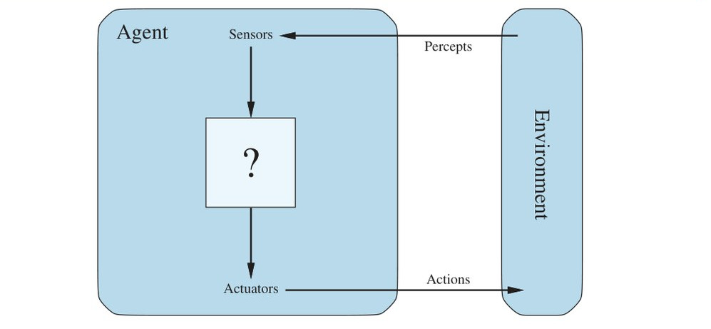
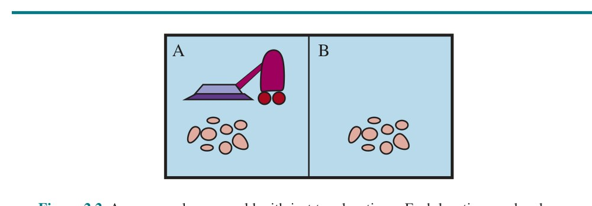
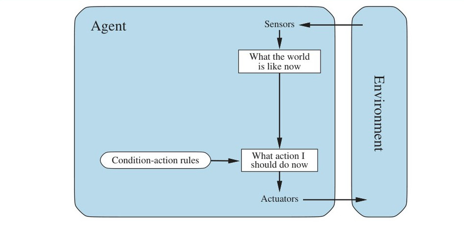
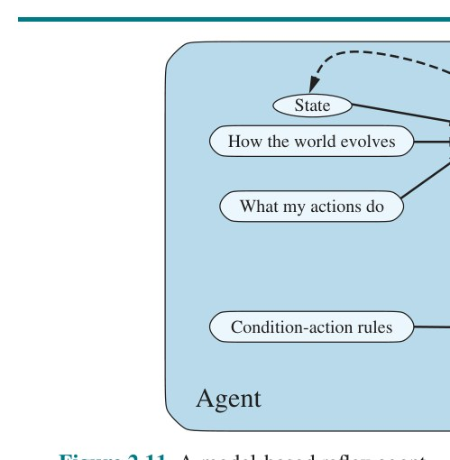
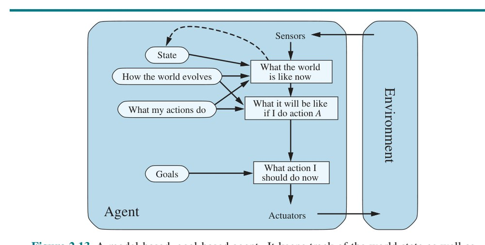
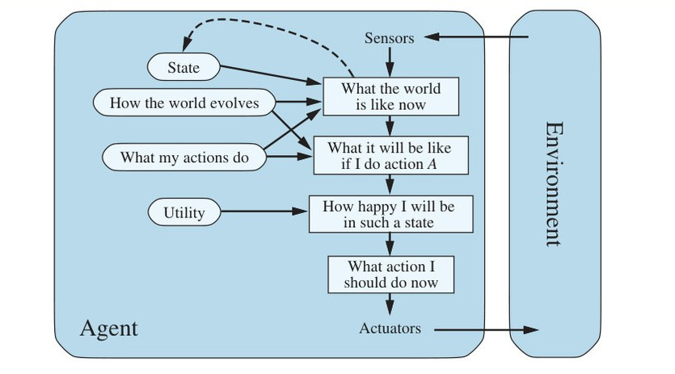
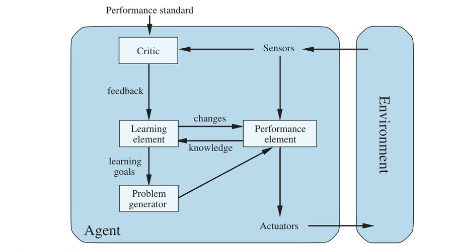
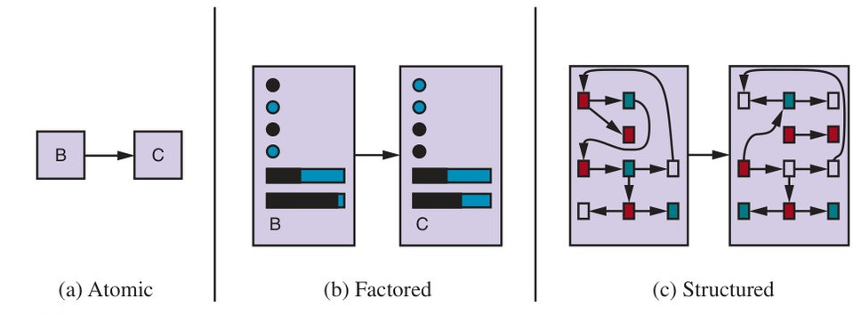

فصل ۲: عاملهای هوشمند (Intelligent Agents)
فصل ۱ مفهوم عامل عقلایی را بهعنوان محور رویکرد ما به هوش مصنوعی شناساند. در این فصل این مفهوم را عینیتر میکنیم. خواهیم دید مفهوم عقلانیت را میتوان بر گسترهٔ وسیعی از عاملها اعمال کرد که در هر محیطِ قابل تصوری کار میکنند. برنامهٔ ما در این کتاب آن است که از این مفهوم برای تدوین مجموعهای کوچک از اصول طراحی برای ساختن عاملهای موفق استفاده کنیم — سامانههایی که بهدرستی بتوان آنها را هوشمند نامید.
با بررسی عاملها، محیطها و پیوند میان آنها آغاز میکنیم. این مشاهده که برخی عاملها از برخی دیگر بهتر رفتار میکنند، بهطور طبیعی به ایدهٔ عامل عقلایی میانجامد — عاملی که تا حد ممکن خوب رفتار میکند. اینکه یک عامل چقدر خوب میتواند رفتار کند، به سرشت محیط بستگی دارد؛ برخی محیطها از برخی دیگر دشوارترند. ردهبندی خامی از محیطها ارائه میدهیم و نشان میدهیم ویژگیهای یک محیط چگونه بر طراحی عاملهای مناسب برای آن محیط تأثیر میگذارد. شماری از طراحیهای پایهٔ «اسکلتی» عامل را توصیف میکنیم که در بقیهٔ کتاب آنها را کامل میکنیم.
عامل (Agent) هر چیزی است که بتوان آن را چنین دید: محیط خود را از طریق حسگرها (Sensors) ادراک میکند و از طریق عملگرها (Actuators) بر آن محیط کنش میگذارد. این ایدهٔ ساده در شکل ۲.۱ نشان داده شده است.
عامل انسانی برای حسگرها چشم، گوش و اندامهای دیگر دارد و برای عملگرها دست، پا، مجرای صوتی و مانند آن. عامل رباتیک ممکن است برای حسگرها دوربین و مسافتیاب مادونقرمز داشته باشد و برای عملگرها موتورهای گوناگون. عامل نرمافزاری محتوای پروندهها، بستههای شبکه و ورودی انسانی (صفحهکلید/ماوس/صفحهٔ لمسی/صدا) را بهعنوان ورودیهای حسی دریافت میکند و با نوشتن پروندهها، فرستادن بستههای شبکه و نمایش اطلاعات یا تولید صدا بر محیط کنش میگذارد. محیط میتواند همهچیز باشد — تمام جهان هستی! در عمل، محیط فقط آن بخش از جهان است که هنگام طراحی این عامل به حالتش اهمیت میدهیم — بخشی که بر آنچه عامل ادراک میکند اثر میگذارد و از کنشهای عامل تأثیر میپذیرد.
از اصطلاح ادراک حسی (Percept) برای اشاره به محتوایی استفاده میکنیم که حسگرهای عامل ادراک میکنند. «توالی ادراک حسی» (Percept Sequence) عامل، تاریخچهٔ کاملِ هر آن چیزی است که عامل تاکنون ادراک کرده است. بهطور کلی، انتخاب کنشِ عامل در هر لحظهٔ معین میتواند به دانشِ ازپیشساختهٔ او و به کل توالی ادراک حسیِ مشاهدهشده تا آن لحظه وابسته باشد، اما نه به چیزی که ادراک نکرده. با مشخص کردن انتخاب کنش عامل برای هر توالی ادراک حسی ممکن، کموبیش هر آنچه دربارهٔ عامل گفتنی است را گفتهایم. به زبان ریاضی، میگوییم رفتار عامل با «تابع عامل» (Agent Function) توصیف میشود که هر توالی ادراک حسی دادهشده را به کنشی نگاشت میکند:
f: P* → A
میتوان تصور کرد تابع عاملِ توصیفکنندهٔ هر عامل دادهشده را بهصورت جدول درآوریم؛ برای بیشتر عاملها این جدول بسیار بزرگ خواهد بود — در واقع بینهایت، مگر آنکه بر طول توالیهای ادراک حسیِ موردنظرمان حدی بگذاریم. با داشتن عاملی برای آزمایش، در اصل میتوانیم این جدول را با آزمودن همهٔ توالیهای ادراک حسی ممکن و ثبت کنشهایی که عامل در پاسخ انجام میدهد بسازیم.¹ جدول البته توصیفی بیرونی از عامل است. در درون، تابع عاملِ یک عامل مصنوعی توسط «برنامهٔ عامل» (Agent Program) پیادهسازی میشود. مهم است این دو ایده را از هم متمایز نگه داریم. تابع عامل یک توصیف ریاضی انتزاعی است؛ برنامهٔ عامل پیادهسازی عینی است که در درون سامانهای فیزیکی اجرا میشود.
برای نشان دادن این ایدهها، از مثال سادهای استفاده میکنیم — «جهان جاروبرقی» که شامل عامل رباتیک جاروبرقی در جهانی از خانههاست که هر خانه میتواند کثیف یا تمیز باشد. شکل ۲.۲ پیکربندی با فقط دو خانه، A و B، را نشان میدهد. عامل جاروبرقی ادراک میکند در کدام خانه است و آیا در آن خانه کثیفی هست. عامل از خانهٔ A آغاز میکند. کنشهای در دسترس عبارتاند از: حرکت به راست، حرکت به چپ، مکیدن کثیفی، یا هیچکاری نکردن.² یکی از تابعهای عامل بسیار ساده چنین است: اگر خانهٔ کنونی کثیف است، بمک؛ وگرنه به خانهٔ دیگر برو. بخشی از جدول این تابع عامل در شکل ۲.۳ و برنامهٔ عاملی که آن را پیاده میکند در شکل ۲.۸ (صفحهٔ ۴۹) آمده است.
با نگاه به شکل ۲.۳ میبینیم عاملهای گوناگون جهان جاروبرقی را میتوان صرفاً با پرکردن ستون راست به شیوههای گوناگون تعریف کرد. پس پرسشِ بدیهی این است: ◭ راهِ درستِ پر کردن جدول چیست؟ به بیان دیگر، چه چیزی عامل را خوب یا بد، هوشمند یا احمق میکند؟ در بخش بعد به این پرسشها پاسخ میدهیم.

| توالی ادراک حسی | کنش |
|---|---|
| [A,Clean] | Right |
| [A,Dirty] | Suck |
| [B,Clean] | Left |
| [B,Dirty] | Suck |
| [A,Clean], [A,Clean] | Right |
| [A,Clean], [A,Dirty] | Suck |
| ... | ... |
| [A,Clean], [A,Clean], [A,Clean] | Right |
| [A,Clean], [A,Clean], [A,Dirty] | Suck |
| ... | ... |
پیش از بستن این بخش، باید تأکید کنیم مفهوم عامل ابزاری برای تحلیل سامانههاست، نه توصیفی مطلق که جهان را به عامل و غیرعامل تقسیم کند. میتوان ماشین حساب دستی را عاملی دید که با دریافت توالی ادراک حسی «۲ + ۲ =» کنشِ نمایش «۴» را برمیگزیند، اما چنین تحلیلی بهندرت فهم ما از ماشین حساب را یاری میکند. از جهتی، همهٔ حوزههای مهندسی را میتوان طراحیِ مصنوعاتی دانست که با جهان تعامل میکنند؛ هوش مصنوعی در (بهباور نویسندگان) جذابترین انتهای این طیف عمل میکند، جایی که مصنوعات منابع محاسباتی چشمگیری دارند و محیط تکلیف به تصمیمگیری غیربدیهی نیاز دارد.
عامل عقلایی (Rational Agent) عاملی است که کار درست را انجام میدهد. بدیهی است انجام کار درست بهتر از کار نادرست است، اما «کار درست» به چه معناست؟
فلسفهٔ اخلاق مفهومهای گوناگونی از «کار درست» پرورانده، اما هوش مصنوعی عموماً به مفهومی به نام پیامدگرایی (Consequentialism) وفادار مانده است: رفتار عامل را با پیامدهایش ارزیابی میکنیم. وقتی عامل در محیطی قرار داده میشود، بر اساس ادراکهایی که دریافت میکند توالیای از کنشها تولید میکند. این توالی کنش باعث میشود محیط از توالیای از حالتها بگذرد. اگر آن توالی مطلوب باشد، عامل خوب عمل کرده است. این مفهوم مطلوبیت با «معیار عملکرد» (Performance Measure) درک میشود که هر توالی دادهشده از حالتهای محیط را ارزیابی میکند.
انسانها خواستهها و ترجیحات خودشان را دارند، پس مفهوم عقلانیتِ اعمالشده بر انسانها به موفقیت آنها در انتخاب کنشهایی مربوط است که توالیهایی از حالتهای محیط تولید میکنند و از دیدگاه خودشان مطلوباند. ماشینها اما خواستهها و ترجیحات خودشان را ندارند؛ معیار عملکرد، دستکم در آغاز، در ذهن طراح ماشین است یا در ذهن کاربرانی که ماشین برای آنان طراحی شده.
خواهیم دید برخی طراحیهای عامل بازنمایی صریحی از (نسخهای از) معیار عملکرد دارند، در حالی که در برخی طراحیهای دیگر معیار عملکرد کاملاً ضمنی است — عامل ممکن است کار درست را انجام دهد، اما نداند چرا.
با یادآوری هشدار نوربرت وینر دربارهٔ تضمین اینکه «هدفِ گذاشتهشده در ماشین، هدفی است که واقعاً خواستاریم» (صفحهٔ ۳۳)، توجه کنید صورتبندی درستِ یک معیار عملکرد میتواند بسیار دشوار باشد. برای نمونه، عامل جاروبرقی بخش پیشین را در نظر بگیرید. شاید پیشنهاد کنیم عملکرد را با مقدار کثیفیِ پاکشده در یک شیفت کاری هشتساعته بسنجیم. با عامل عقلایی، البته، هر چه بخواهید همان را میگیرید. عامل عقلایی میتواند این معیار عملکرد را با تمیزکردن کثیفی، سپس ریختن دوبارهٔ همهٔ آن روی زمین، و دوباره تمیزکردن آن، و همینطور ادامه، بیشینه کند. معیار عملکرد مناسبتر، عاملی را پاداش میدهد که کف را تمیز نگه میدارد. برای نمونه، در هر گام زمانی بهازای هر خانهٔ تمیز یک امتیاز (و شاید جریمهای برای برق مصرفی و سر و صدای تولیدشده). بهعنوان قاعدهای کلی، بهتر است معیارهای عملکرد را بر اساس آنچه واقعاً میخواهیم در محیط محقق شود طراحی کنیم، نه بر اساس تصورمان از اینکه عامل باید چگونه رفتار کند. ◭
حتی وقتی از این دامهای بدیهی پرهیز شود، مسائل گرهداری باقی میمانند. برای نمونه، مفهوم «کف تمیز» در بند پیشین بر میانگین تمیزی در طول زمان مبتنی است. با این حال، دو عامل متفاوت میتوانند همان میانگین تمیزی را به دست آورند: یکی که همیشه کار متوسطی میکند و دیگری که با انرژی تمیز میکند اما استراحتهای طولانی دارد. کدام مطلوبتر است شاید نکتهای ظریف در «علم سرایداری» بنماید، اما در واقع پرسشی عمیق فلسفی با پیامدهای دوربرد است. کدام بهتر است — زندگی پرمخاطرهٔ اوجوفرود، یا وجودی امن اما یکنواخت؟ کدام بهتر است — اقتصادی که همه در فقر متوسط زندگی میکنند، یا اقتصادی که برخی در فراوانیاند و برخی بسیار فقیر؟ این پرسشها را بهعنوان تمرین به خوانندهٔ کوشا واگذار میکنیم.
در بیشتر این کتاب فرض میکنیم معیار عملکرد را میتوان درست مشخص کرد. اما به دلایل بالا، باید این امکان را بپذیریم که هدفِ اشتباهی در ماشین بگذاریم — دقیقاً همان مسئلهٔ شاه ماداس که در صفحهٔ ۳۳ توصیف شد. وانگهی، هنگام طراحی قطعهٔ نرمافزاری که نسخههایش متعلق به کاربران گوناگون خواهد بود، نمیتوانیم ترجیحات دقیق هر کاربر را پیشبینی کنیم. پس ممکن است نیاز داشته باشیم عاملهایی بسازیم که عدم قطعیت آغازین دربارهٔ معیار عملکرد واقعی را بازتاب دهند و با گذشت زمان بیشتر دربارهٔ آن بیاموزند؛ چنین عاملهایی در فصلهای ۱۶، ۱۸ و ۲۲ توصیف میشوند.
آنچه در هر لحظهٔ معین عقلایی است به چهار چیز بستگی دارد:
این به تعریفی از عامل عقلایی میانجامد:
عامل جاروبرقی ساده را در نظر بگیرید که اگر خانهای کثیف باشد آن را تمیز میکند وگرنه به خانهٔ دیگر میرود؛ این همان تابع عاملی است که در شکل ۲.۳ جدولبندی شده. آیا این عامل عقلایی است؟
بستگی دارد! نخست باید بگوییم معیار عملکرد چیست، دربارهٔ محیط چه چیزهایی دانسته میشود و عامل چه حسگرها و عملگرهایی دارد. فرض کنیم:
در این شرایط عامل واقعاً عقلایی است؛ عملکرد مورد انتظارش دستکم به خوبی هر عامل دیگری است. بهراحتی میتوان دید همان عامل در شرایط متفاوت غیرعقلایی خواهد بود. برای نمونه، وقتی همهٔ کثیفیها پاک شد، عامل بیجهت به اینسو و آنسو نوسان خواهد کرد؛ اگر معیار عملکرد برای هر حرکت جریمهای یکامتیازی در بر داشته باشد، عامل بد عمل خواهد کرد. عامل بهتر در این مورد پس از اطمینان از تمیزی همهٔ خانهها هیچکاری نمیکرد. اگر خانههای تمیز دوباره کثیف شوند، عامل باید گاهبهگاه بررسی و در صورت نیاز بازتمیزی کند. اگر جغرافیای محیط ناشناخته باشد، عامل باید آن را کاوش کند. تمرین 2.VACR از شما میخواهد برای این موارد عامل طراحی کنید.
باید مراقب باشیم عقلانیت را با دانایی مطلق (Omniscience) اشتباه نگیریم. عامل دانای مطلق، پیامد واقعی کنشهایش را میداند و میتواند بر آن اساس عمل کند؛ اما دانایی مطلق در واقعیت ناممکن است. این مثال را در نظر بگیرید: روزی در خیابان شانزلیزه راه میروم و دوست قدیمیام را آنسوی خیابان میبینم. ترافیکی نزدیک نیست و کار دیگری هم ندارم؛ پس بهعنوان موجودی عقلایی شروع به عبور از خیابان میکنم. در همین حال، در ارتفاع ۳۳٬۰۰۰ پایی، درِ بار یک هواپیمای مسافربریِ عبوری جدا میشود³ و پیش از آنکه به آنسوی خیابان برسم، پهنم میکند. آیا عبور از خیابان غیرعقلایی بود؟ بعید است آگهی فوت من چنین باشد: «احمقی در تلاش برای عبور از خیابان». این مثال نشان میدهد عقلانیت همان کمال نیست. عقلانیت عملکردِ مورد انتظار را بیشینه میکند، در حالی که کمال، عملکردِ واقعی را بیشینه میکند. عقبنشینی از خواستهٔ کمال فقط مسئلهٔ منصفبودن با عاملها نیست. نکته این است که اگر انتظار داشته باشیم عامل کنشی را انجام دهد که پس از وقوع معلوم میشود بهترین بوده، طراحی عاملی که این مشخصات را برآورده کند ناممکن خواهد بود — مگر آنکه عملکرد گوی بلورین یا ماشین زمان را بهبود دهیم.
پس تعریف ما از عقلانیت دانایی مطلق را نمیطلبد، زیرا انتخاب عقلایی فقط به توالی ادراک حسیِ تاکنون بستگی دارد. همچنین باید اطمینان حاصل کنیم ناخواسته به عامل اجازه ندادهایم درگیر فعالیتهای قطعاً کمهوشانه شود. برای نمونه، اگر عاملی پیش از عبور از جادهای شلوغ به دو سو نگاه نکند، توالی ادراک حسیاش به او نخواهد گفت کامیون بزرگی با سرعت زیاد نزدیک میشود. آیا تعریف ما از عقلانیت میگوید حالا عبور از جاده ایرادی ندارد؟ بههیچوجه!
نخست، با این توالی ادراک حسی بیاطلاعکننده، عبور از جاده عقلایی نیست: ریسک تصادفِ عبور بدون نگاهکردن بسیار زیاد است. دوم، عامل عقلایی باید پیش از پاگذاشتن به خیابان کنشِ «نگاهکردن» را برگزیند، زیرا نگاهکردن به بیشینهشدن عملکرد مورد انتظار کمک میکند. انجام کنشها برای اصلاح ادراکهای حسی آینده — که گاه «جمعآوری اطلاعات» (Information Gathering) نامیده میشود — بخش مهمی از عقلانیت است و در فصل ۱۶ بهطور عمیق پوشش داده میشود. مثال دومِ جمعآوری اطلاعات، کاوشی است که عامل جاروبرقی باید در محیطِ ناشناخته از آغاز انجام دهد.
تعریف ما ایجاب میکند عامل عقلایی نه فقط اطلاعات جمع کند، بلکه تا حد ممکن از آنچه ادراک میکند بیاموزد (Learning). پیکربندی آغازین عامل میتواند دانشی قبلی دربارهٔ محیط را بازتاب دهد، اما با کسب تجربه توسط عامل، این دانش میتواند اصلاح و افزوده شود. موارد افراطی وجود دارد که محیط از پیش کاملاً شناختهشده و کاملاً قابل پیشبینی است. در چنین مواردی عامل نه نیاز به ادراک دارد نه به یادگیری؛ فقط درست عمل میکند. البته چنین عاملهایی شکنندهاند.
سوسک سرگینغلتانِ بیآزار را در نظر بگیرید. پس از کندن لانه و تخمگذاری، گلولهٔ سرگینی از تودهای نزدیک میآورد تا ورودی را ببندد. اگر گلولهٔ سرگین در مسیر از چنگش گرفته شود، سوسک به کارش ادامه میدهد و بستن لانه با گلولهٔ سرگین ناموجود را پانتومیم میکند و هرگز متوجه نمیشود گم شده. تکامل فرضی در رفتار سوسک ساخته است و وقتی آن فرض نقض شود، رفتار نافرجام به بار میآید. کمی هوشمندتر، زنبور اسفکس است. زنبور ماده اسفکس لانهای میکَند، بیرون میرود و کرمی را نیش میزند و به لانه میکشد، دوباره وارد لانه میشود تا مطمئن شود همهچیز مرتب است، کرم را به داخل میکشد و تخم میگذارد. کرم منبع غذایی است وقتی تخمها باز شوند. تا اینجا همهچیز خوب است، اما اگر حشرهشناسی هنگام بازبینیِ زنبور، کرم را چند سانتیمتر جابهجا کند، زنبور به گام «کشیدن کرم» از برنامهاش بازمیگردد و برنامه را بدون تغییر ادامه میدهد و لانه را دوباره بازبینی میکند، حتی پس از دهها بار جابهجایی کرم. زنبور اسفکس نمیتواند بیاموزد برنامهٔ فطریاش در حال شکست است و بنابراین آن را تغییر نمیدهد.
تا جایی که عامل به دانش قبلی طراحش تکیه کند نه به ادراکهای حسی و فرایندهای یادگیری خودش، میگوییم عامل «خودمختاری» (Autonomy) ندارد. عامل عقلایی باید خودمختار باشد — باید آنچه میتواند بیاموزد تا کاستی یا نادرستی دانش قبلی را جبران کند. برای نمونه، عامل جاروبرقی که یاد میگیرد کثیفی اضافی کجا و چهوقت ظاهر خواهد شد، بهتر از عاملی عمل میکند که این را نمیآموزد.
بهعنوان امری عملی، بهندرت از همان آغاز خودمختاری کامل میخواهیم: وقتی عامل تجربهای کم یا هیچ داشته باشد، ناگزیر است تصادفی عمل کند، مگر آنکه طراح کمکی کرده باشد. همانگونه که تکامل به جانوران بازتابهای فطری کافی میدهد تا آنقدر زنده بمانند که خودشان یاد بگیرند، معقول است به عامل هوشمند مصنوعی هم دانشی آغازین و هم توانایی یادگیری دهیم. پس از تجربهٔ کافی از محیط، رفتار عامل عقلایی میتواند عملاً مستقل از دانش قبلیاش شود. از این رو، گنجاندن یادگیری به ما امکان میدهد عاملی عقلاییِ واحد طراحی کنیم که در گسترهٔ عظیمی از محیطها موفق خواهد بود.
حال که تعریفی از عقلانیت داریم، تقریباً آمادهایم به ساختن عاملهای عقلایی بیندیشیم. اما نخست باید به «محیطهای تکلیف» (Task Environments) بیندیشیم که در اصل «مسئلههایی» هستند که عاملهای عقلایی «راهحل» آنها هستند. آغاز میکنیم با نشاندادن اینکه چگونه محیط تکلیف را مشخص کنیم و این فرایند را با چند مثال نشان میدهیم. سپس نشان میدهیم محیطهای تکلیف طعمهای گوناگونی دارند. سرشت محیط تکلیف مستقیماً بر طراحی مناسب برنامهٔ عامل اثر میگذارد.
در بحثمان دربارهٔ عقلانیتِ عامل جاروبرقی ساده، باید معیار عملکرد، محیط و عملگرها و حسگرهای عامل را مشخص میکردیم. همهٔ اینها را زیر عنوان محیط تکلیف گروهبندی میکنیم. برای مخففدوستها، این را توصیف PEAS (عملکرد، محیط، عملگرها، حسگرها — Performance, Environment, Actuators, Sensors) مینامیم. در طراحی عامل، نخستین گام همیشه باید مشخص کردن هرچه کاملتر محیط تکلیف باشد.
جهان جاروبرقی مثال سادهای بود؛ مسئلهٔ پیچیدهتری در نظر بگیریم: رانندهٔ تاکسی خودکار. شکل ۲.۴ توصیف PEAS را برای محیط تکلیف تاکسی خلاصه میکند. هر عنصر را در بندهای بعد با جزئیات بیشتری بحث میکنیم.
نخست، معیار عملکردی که میخواهیم رانندهٔ خودکار ما به آن برسد چیست؟ ویژگیهای مطلوب شامل رسیدن به مقصد درست؛ کمینهکردن مصرف سوخت و استهلاک؛ کمینهکردن زمان یا هزینهٔ سفر؛ کمینهکردن تخلف از قوانین راهنمایی و مزاحمت برای دیگر رانندگان؛ بیشینهکردن ایمنی و آسایش سرنشین؛ و بیشینهکردن سود است. بدیهی است برخی از این هدفها با هم در تعارضاند، پس دادوستد لازم خواهد بود.
بعد، محیط رانندگیای که تاکسی با آن روبهرو خواهد شد چیست؟ هر رانندهٔ تاکسی باید با گسترهای از جادهها کنار بیاید، از مسیرهای روستایی و کوچههای شهری تا بزرگراههای دوازدهخطه. جادهها حاوی ترافیک دیگر، عابران پیاده، جانوران سرگردان، کارهای جادهای، خودروهای پلیس، چالهها و دستاندازها هستند. تاکسی همچنین باید با مسافران بالقوه و بالفعل تعامل کند. انتخابهای اختیاری هم هست. تاکسی ممکن است لازم باشد در کالیفرنیای جنوبی کار کند، جایی که برف بهندرت مشکلساز است، یا در آلاسکا، جایی که برف بهندرت بیمشکل است. ممکن است همیشه در سمت راست جاده رانندگی کند، یا شاید بخواهیم آنقدر منعطف باشد که در بریتانیا یا ژاپن در سمت چپ رانندگی کند. بدیهی است هرچه محیط محدودتر باشد، مسئلهٔ طراحی آسانتر است.
| نوع عامل | معیار عملکرد | محیط | عملگرها | حسگرها |
|---|---|---|---|---|
| رانندهٔ تاکسی | سفر امن، سریع، قانونی، راحت؛ بیشینهکردن سود؛ کمینهکردن اثر بر دیگر کاربران جاده | جادهها، ترافیک دیگر، پلیس، عابران، مشتریان، آبوهوا | فرمان، گاز، ترمز، راهنما، بوق، نمایشگر، گفتار | دوربینها، رادار، سرعتسنج، GPS، حسگرهای موتور، شتابسنج، میکروفونها، صفحهٔ لمسی |
عملگرهای تاکسی خودکار شامل آنچه رانندهٔ انسانی دارد میشود: کنترل موتور از طریق گاز و کنترل فرمان و ترمز. افزون بر آن، به خروجی برای صفحهٔ نمایش یا سنتزکنندهٔ صدا برای پاسخدادن به مسافران نیاز دارد و شاید راهی برای ارتباط با دیگر وسایل نقلیه، مؤدبانه یا غیر آن.
حسگرهای پایهٔ تاکسی شامل یک یا چند دوربین ویدئویی برای دیدن، و نیز حسگرهای لیدار و اولتراسونیک برای تشخیص فاصله تا خودروهای دیگر و موانع خواهد بود. برای اجتناب از جریمهٔ سرعت، تاکسی باید سرعتسنج داشته باشد و برای کنترل درست خودرو، بهویژه در پیچها، شتابسنج. برای تعیین حالت مکانیکی خودرو، به آرایهٔ معمول حسگرهای موتور، سوخت و سامانهٔ الکتریکی نیاز دارد. مانند بسیاری رانندگان انسانی، شاید بخواهد به سیگنالهای GPS دسترسی داشته باشد تا گم نشود. سرانجام، برای درخواست مقصد توسط مسافر به ورودی صفحهٔ لمسی یا صوتی نیاز خواهد داشت.
در شکل ۲.۵ عناصر پایهٔ PEAS را برای چند عامل دیگر ترسیم کردهایم.
| نوع عامل | معیار عملکرد | محیط | عملگرها | حسگرها |
|---|---|---|---|---|
| سامانهٔ تشخیص پزشکی | بیمار سالم، هزینههای کمتر | بیمار، بیمارستان، کارکنان | نمایش پرسشها، آزمایشها، تشخیصها، درمانها | ورود لمسی/صوتی علائم و یافتهها |
| سامانهٔ تحلیل تصاویر ماهوارهای | ردهبندی درست اشیا، عوارض زمین | ماهوارهٔ مداری، پایگاه دادهٔ پایینفرست، آبوهوا | نمایش ردهبندی صحنه | دوربین دیجیتال وضوحبالا |
| ربات قطعهچین | درصد قطعات در سبدهای درست | نوار نقاله با قطعات؛ سبدها | بازوی مفصلی و دست | دوربین، حسگرهای لامسهای و زاویهٔ مفصل |
| کنترلگر پالایشگاه | خلوص، بازده، ایمنی | پالایشگاه، مواد خام، اپراتورها | شیرها، پمپها، گرمکنها، همزنها، نمایشگرها | حسگرهای دما، فشار، جریان، شیمیایی |
| معلم انگلیسی تعاملی | نمرهٔ دانشجو در آزمون | مجموعهٔ دانشجویان، نهاد آزمون | نمایش تمرینها، بازخورد، گفتار | ورود صفحهکلید، صدا |
گسترهٔ محیطهای تکلیفی که ممکن است در هوش مصنوعی پیش آید بدیهی است عظیم است. با این حال، میتوانیم تعداد نسبتاً کمی «بُعد» شناسایی کنیم که محیطهای تکلیف را بر اساس آنها میتوان ردهبندی کرد. این ابعاد تا حد زیادی طراحی مناسب عامل و کاربردپذیری هر یک از خانوادههای اصلی فنون پیادهسازی عامل را تعیین میکنند. نخست ابعاد را فهرست میکنیم، سپس چند محیط تکلیف را برای نشان دادن ایدهها تحلیل میکنیم. تعریفهای اینجا غیررسمیاند؛ فصلهای بعدی بیانیههای دقیقتر و مثالهایی از هر نوع محیط ارائه میدهند.
کاملاً قابل مشاهده در برابر تا حدی قابل مشاهده (Fully observable vs. partially observable): اگر حسگرهای عامل در هر نقطهٔ زمانی به او دسترسی به حالت کامل محیط بدهند، میگوییم محیط تکلیف کاملاً قابل مشاهده است. محیط تکلیف بهشکل مؤثر کاملاً قابل مشاهده است اگر حسگرها همهٔ جنبههای مرتبط با انتخاب کنش را شناسایی کنند؛ «مرتبط بودن» نیز به نوبهٔ خود به معیار عملکرد بستگی دارد. محیطهای کاملاً قابل مشاهده راحتاند، زیرا عامل لازم نیست حالت درونیای برای پیگیری جهان نگه دارد. محیطی ممکن است تا حدی قابل مشاهده باشد بهسبب حسگرهای پرسروصدا و نادقیق یا بهسبب آنکه بخشهایی از حالت صرفاً در دادهٔ حسگرها غایباند — برای نمونه، عامل جاروبرقی با حسگر کثیفیِ محلی نمیتواند بگوید آیا در خانههای دیگر کثیفی هست، و تاکسی خودکار نمیتواند ببیند دیگر رانندگان به چه میاندیشند. اگر عامل هیچ حسگری نداشته باشد، محیط غیرقابل مشاهده (Unobservable) است. شاید فکر کنید در چنین مواردی وضعیت عامل ناامیدکننده است، اما چنانکه در فصل ۴ بحث میکنیم، هدفهای عامل ممکن است همچنان دستیافتنی باشند، گاهی با قطعیت.
تکعاملی در برابر چندعاملی (Single-agent vs. multiagent): تمایز میان محیطهای تکعاملی و چندعاملی شاید بهاندازهٔ کافی ساده بنماید. برای نمونه، عاملی که بهتنهایی جدول کلمات متقاطع حل میکند قطعاً در محیط تکعاملی است، حال آنکه عاملِ بازی شطرنج در محیط دوعاملی است. اما مسائل ظریفی وجود دارد. نخست، توصیف کردیم که چگونه یک موجودیت را میتوان عامل دید، اما توضیح ندادهایم کدام موجودیتها را باید عامل دید. آیا عامل A (مثلاً رانندهٔ تاکسی) باید موجودیت B (خودرویی دیگر) را عامل بپندارد، یا میتواند آن را صرفاً شیءِ رفتارکننده بر پایهٔ قوانین فیزیک بداند، مانند امواج ساحل یا برگهایی که در باد میوزند؟ تمایز کلیدی این است که آیا رفتار B را بهتر است بهمثابه بیشینهکردن معیار عملکردی توصیف کرد که ارزشش به رفتار عامل A بستگی دارد؟
برای نمونه، در شطرنج، موجودیت حریف B میکوشد معیار عملکردش را بیشینه کند که بر اساس قواعد شطرنج، معیار عملکرد عامل A را کمینه میکند. پس شطرنج محیط چندعاملی رقابتی (Competitive) است. از سوی دیگر، در محیط رانندگی تاکسی، اجتناب از تصادف معیار عملکرد همهٔ عاملها را بیشینه میکند، پس محیطی چندعاملی تا حدی همکارانه (Cooperative) است. همچنین تا حدی رقابتی است، زیرا برای نمونه فقط یک خودرو میتواند یک جای پارک را اشغال کند.
مسائل طراحی عامل در محیطهای چندعاملی اغلب کاملاً متفاوت از محیطهای تکعاملیاند؛ برای نمونه، ارتباط اغلب در محیطهای چندعاملی بهعنوان رفتاری عقلایی پدیدار میشود؛ در برخی محیطهای رقابتی، رفتار تصادفی عقلایی است، زیرا از دامهای قابل پیشبینیبودن میپرهیزد.
جبرگرایانه در برابر ناجبرگرایانه (Deterministic vs. nondeterministic): اگر حالت بعدی محیط کاملاً توسط حالت کنونی و کنشِ اجراشده توسط عامل(ها) تعیین شود، میگوییم محیط جبرگرایانه است؛ وگرنه ناجبرگرایانه است. در اصل، عامل در محیط کاملاً قابل مشاهده و جبرگرایانه لازم نیست نگران عدم قطعیت باشد. اما اگر محیط تا حدی قابل مشاهده باشد، ممکن است ناجبرگرایانه بنماید.
بیشتر موقعیتهای واقعی چنان پیچیدهاند که پیگیری همهٔ جنبههای مشاهدهنشده ناممکن است؛ برای اهداف عملی، باید آنها را ناجبرگرایانه دانست. رانندگی تاکسی به این معنا قطعاً ناجبرگرایانه است، زیرا هرگز نمیتوان رفتار ترافیک را دقیقاً پیشبینی کرد؛ وانگهی، ممکن است لاستیکها بهطور غیرمنتظره پنچر شوند و موتور بدون هشدار از کار بیفتد. جهان جاروبرقیِ چنانکه توصیف کردیم جبرگرایانه است، اما تغییرهایش میتواند عناصر ناجبرگرایانه در بر داشته باشد، مانند کثیفیِ تصادفیظهور و سازوکار مکش غیرقابلاعتماد (تمرین 2.VFIN). یک نکتهٔ پایانی: برخی از واژهٔ تصادفی (Stochastic) بهعنوان مترادف «ناجبرگرایانه» استفاده میکنند، اما ما میان این دو اصطلاح تمایز قائل میشویم؛ میگوییم مدلی از محیط تصادفی است اگر بهصراحت با احتمالها سروکار داشته باشد (مثلاً «۲۵٪ احتمال باران فرداست») و «ناجبرگرایانه» اگر امکانها بدون کمیشدن فهرست شوند (مثلاً «احتمال باران فرداست»).
تکرارشونده در برابر توالیدار (Episodic vs. sequential): در محیط تکلیف تکرارشونده، تجربهٔ عامل به تکرارههای اتمی تقسیم میشود. در هر تکراره، عامل ادراک حسی دریافت میکند و سپس یک کنش واحد انجام میدهد. نکتهٔ حیاتی این است که تکرارهٔ بعدی به کنشهای انجامشده در تکرارههای قبلی بستگی ندارد. بسیاری از تکلیفهای ردهبندی تکرارشوندهاند. برای نمونه، عاملی که باید قطعات معیوب را در خط مونتاژ شناسایی کند، هر تصمیم را بر قطعهٔ کنونی استوار میکند، صرفنظر از تصمیمهای قبلی؛ وانگهی، تصمیم کنونی بر معیوببودن قطعهٔ بعدی اثر نمیگذارد. در محیطهای توالیدار اما تصمیم کنونی میتواند بر همهٔ تصمیمهای آینده اثر بگذارد.⁴ شطرنج و رانندگی تاکسی توالیدارند: در هر دو، کنشهای کوتاهمدت میتوانند پیامدهای بلندمدت داشته باشند. محیطهای تکرارشونده بسیار سادهتر از محیطهای توالیدارند، زیرا عامل لازم نیست به آینده بیندیشد.
ایستا در برابر پویا (Static vs. dynamic): اگر محیط بتواند هنگام اندیشیدنِ عامل تغییر کند، میگوییم محیط برای آن عامل پویا است؛ وگرنه ایستا. محیطهای ایستا آساناند، زیرا عامل هنگام تصمیمگیری دربارهٔ کنش لازم نیست مدام به جهان نگاه کند و لازم نیست نگران گذر زمان باشد. محیطهای پویا اما پیوسته از عامل میپرسند چه میخواهد بکند؛ اگر هنوز تصمیم نگرفته باشد، این بهمثابه تصمیم به هیچکارینکردن شمرده میشود. اگر خودِ محیط با گذر زمان تغییر نکند اما امتیاز عملکرد عامل تغییر کند، میگوییم محیط نیمهپویا (Semidynamic) است. رانندگی تاکسی قطعاً پویاست: خودروهای دیگر و خودِ تاکسی پیوسته در حرکتاند در حالی که الگوریتم رانندگی دربارهٔ گام بعدی تردید میکند. شطرنجِ بازیشده با ساعت، نیمهپویاست. جدول کلمات متقاطع ایستاست.
گسسته در برابر پیوسته (Discrete vs. continuous): تمایز گسسته/پیوسته به حالت محیط، به شیوهٔ رسیدگی به زمان، و به ادراکهای حسی و کنشهای عامل اعمال میشود. برای نمونه، محیط شطرنج تعداد متناهی حالت متمایز دارد (بهجز ساعت). شطرنج همچنین مجموعهای گسسته از ادراکهای حسی و کنشها دارد. رانندگی تاکسی مسئلهای با حالت پیوسته و زمان پیوسته است: سرعت و مکان تاکسی و دیگر وسایل نقلیه از گسترهای از مقادیر پیوسته میگذرند و این کار را در طول زمان نرم انجام میدهند. کنشهای رانندگی تاکسی نیز پیوستهاند (زاویهٔ فرمان و...). ورودی دوربینهای دیجیتال، به بیان دقیق، گسسته است، اما معمولاً بهعنوان بازنماییِ شدتها و مکانهای متغیرِ پیوسته در نظر گرفته میشود.
شناختهشده در برابر ناشناخته (Known vs. unknown): به بیان دقیق، این تمایز به خودِ محیط اشاره ندارد، بلکه به وضعیت دانش عامل (یا طراح) دربارهٔ «قوانین فیزیک» محیط اشاره دارد. در محیط شناختهشده، پیامدها (یا احتمالهای پیامد، اگر محیط ناجبرگرایانه باشد) برای همهٔ کنشها داده شدهاند. بدیهی است اگر محیط ناشناخته باشد، عامل باید یاد بگیرد چگونه کار میکند تا تصمیمهای خوب بگیرد.
تمایز محیط شناختهشده و ناشناخته همان تمایز کاملاً/تا حدی قابل مشاهده نیست. کاملاً ممکن است محیطی شناختهشده تا حدی قابل مشاهده باشد — برای نمونه، در بازیهای ورق یکنفره، قواعد را میدانم اما هنوز نمیتوانم ورقهایی را ببینم که روینشدهاند. برعکس، محیط ناشناخته میتواند کاملاً قابل مشاهده باشد — در بازی ویدئویی تازهای، صفحه ممکن است کل حالت بازی را نشان دهد اما من هنوز نمیدانم دکمهها چه میکنند تا آنکه امتحانشان کنم.
چنانکه در صفحهٔ ۳۹ یادآوری شد، خودِ معیار عملکرد ممکن است ناشناخته باشد؛ یا بهسبب آنکه طراح مطمئن نیست چگونه آن را درست بنویسد، یا بهسبب آنکه کاربر نهایی — که ترجیحاتش اهمیت دارد — شناخته نشده. برای نمونه، رانندهٔ تاکسی معمولاً نمیداند آیا مسافر تازه سفر آهسته را ترجیح میدهد یا پرسرعت، سبک رانندگی محتاطانه را یا تهاجمی. دستیار شخصی مجازی از آغاز هیچچیز دربارهٔ ترجیحات شخصیِ مالک تازهاش نمیداند. در چنین مواردی، عامل ممکن است از طریق تعاملهای بیشتر با طراح یا کاربر دربارهٔ معیار عملکرد بیشتر بیاموزد. این به نوبهٔ خود پیشنهاد میکند محیط تکلیف ناگزیر باید بهعنوان محیط چندعاملی دیده شود.
دشوارترین حالت، محیطی است تا حدی قابل مشاهده، چندعاملی، ناجبرگرایانه، توالیدار، پویا، پیوسته و ناشناخته. رانندگی تاکسی از همهٔ این جهات دشوار است، بهجز آنکه محیط راننده بیشتر شناختهشده است. رانندگی با خودروی کرایهای در کشور تازهای با جغرافیای ناآشنا، قوانین راهنمایی متفاوت و مسافران مضطرب بسیار هیجانانگیزتر است.
شکل ۲.۶ ویژگیهای چند محیط آشنا را فهرست میکند. توجه کنید ویژگیها همیشه قطعی نیستند. برای نمونه، تکلیف تشخیص پزشکی را تکعاملی فهرست کردهایم، زیرا فرایند بیماری در بیمار بهشکل سودمندی بهعنوان عامل مدل نمیشود؛ اما سامانهٔ تشخیص پزشکی ممکن است با بیماران نافرمان و کارکنان بدبین هم سروکار داشته باشد، پس محیط میتواند جنبهٔ چندعاملی داشته باشد. وانگهی، تشخیص پزشکی اگر تکلیف را انتخاب تشخیص با فهرست علائم بپنداریم تکرارشونده است؛ اگر تکلیف شامل پیشنهاد مجموعهای از آزمایشها، ارزیابی پیشرفت در طول درمان، رسیدگی به چند بیمار و مانند آن باشد، توالیدار است.
| محیط تکلیف | قابل مشاهده | عاملها | جبرگرایی | تکرار | ایستایی | گسسته |
|---|---|---|---|---|---|---|
| جدول کلمات متقاطع | کامل | تکعاملی | جبری | توالیدار | ایستا | گسسته |
| شطرنج با ساعت | کامل | چندعاملی | جبری | توالیدار | نیمهپویا | گسسته |
| پوکر | تا حدی | چندعاملی | تصادفی | توالیدار | ایستا | گسسته |
| تختهنرد | کامل | چندعاملی | تصادفی | توالیدار | ایستا | گسسته |
| رانندگی تاکسی | تا حدی | چندعاملی | تصادفی | توالیدار | پویا | پیوسته |
| تشخیص پزشکی | تا حدی | تکعاملی | تصادفی | توالیدار | پویا | پیوسته |
| تحلیل تصویر | کامل | تکعاملی | جبری | تکرارشونده | نیمهپویا | پیوسته |
| ربات قطعهچین | تا حدی | تکعاملی | تصادفی | تکرارشونده | پویا | پیوسته |
| کنترلگر پالایشگاه | تا حدی | تکعاملی | تصادفی | توالیدار | پویا | پیوسته |
| معلم انگلیسی | تا حدی | چندعاملی | تصادفی | توالیدار | پویا | گسسته |
ستون «شناخته/ناشناخته» را نگنجاندهایم، زیرا چنانکه پیشتر توضیح داده شد، به بیان دقیق این ویژگیِ خود محیط نیست. برای برخی محیطها، مانند شطرنج و پوکر، دادن دانش کامل قواعد به عامل بسیار آسان است، اما با این حال جالب است در نظر بگیریم عاملی چگونه ممکن است بازیکردن را بدون چنین دانشی بیاموزد.
مخزن کدِ همراه این کتاب (aima.cs.berkeley.edu) شامل پیادهسازیهای متعدد محیط، همراه با شبیهساز محیطی همهمنظوره برای ارزیابی عملکرد عامل است. آزمایشها اغلب نه برای یک محیط منفرد، بلکه برای بسیاری از محیطهای برگرفته از «ردهٔ محیط» (Environment Class) انجام میشوند. برای نمونه، برای ارزیابی رانندهٔ تاکسی در ترافیک شبیهسازیشده، میخواهیم شبیهسازیهای فراوانی با شرایط ترافیک، نور و آبوهوای گوناگون اجرا کنیم. آنگاه به عملکرد میانگین عامل بر روی ردهٔ محیط علاقهمندیم.
تا اینجا دربارهٔ عاملها با توصیف رفتار — کنشی که پس از هر توالی معین از ادراکهای حسی انجام میشود — سخن گفتیم. اکنون باید گاز را گاز بگیریم و دربارهٔ چگونگی کارکرد درونها بحث کنیم. کار هوش مصنوعی طراحی برنامهٔ عاملی است که تابع عامل را پیادهسازی کند — نگاشت از ادراکهای حسی به کنشها. فرض میکنیم این برنامه روی نوعی دستگاه محاسباتی با حسگرها و عملگرهای فیزیکی اجرا خواهد شد — این را «معماری عامل» (Agent Architecture) مینامیم:
عامل = معماری + برنامهبدیهی است برنامهای که برمیگزینیم باید با معماری سازگار باشد. اگر برنامه قرار است کنشهایی مانند «راه برو» پیشنهاد کند، معماری بهتر است پا داشته باشد. معماری ممکن است فقط یک رایانهٔ شخصی معمولی باشد، یا خودروی رباتیک با چند رایانهٔ رویخودرو، دوربینها و حسگرهای دیگر. بهطور کلی، معماری ادراکهای حسیِ حسگرها را در دسترس برنامه قرار میدهد، برنامه را اجرا میکند و انتخابهای کنشِ برنامه را هنگام تولید به عملگرها میرساند. بیشتر این کتاب دربارهٔ طراحی برنامههای عامل است، هرچند فصلهای ۲۵ و ۲۶ مستقیماً با حسگرها و عملگرها سروکار دارند.
برنامههای عاملی که در این کتاب طراحی میکنیم همگی اسکلت یکسانی دارند: ادراک حسی کنونی را بهعنوان ورودی از حسگرها میگیرند و کنشی را به عملگرها بازمیگردانند.⁵ به تفاوت برنامهٔ عامل که ادراک حسی کنونی را بهعنوان ورودی میگیرد و تابع عامل که ممکن است به کل تاریخچهٔ ادراک حسی وابسته باشد توجه کنید. برنامهٔ عامل چارهای جز گرفتن فقط ادراک حسی کنونی بهعنوان ورودی ندارد، زیرا از محیط چیزی بیشتر در دسترس نیست؛ اگر کنشهای عامل باید به کل توالی ادراک حسی وابسته باشند، عامل باید ادراکها را به خاطر بسپارد. برنامههای عامل را در زبان شبهکد سادهای توصیف میکنیم که در پیوست ب تعریف شده است. (مخزن کد آنلاین شامل پیادهسازیها به زبانهای برنامهنویسی واقعی است.) برای نمونه، شکل ۲.۷ برنامهٔ عامل نسبتاً پیشپاافتادهای را نشان میدهد که توالی ادراک حسی را پیگیری میکند و سپس از آن برای فهرستیابی در جدول کنشها برای تصمیمگیری استفاده میکند.
function TABLE-DRIVEN-AGENT(percept) returns an action
persistent:
percepts, a sequence, initially empty
table, a table of actions, indexed by percept sequences, initially fully specified
add percept to the end of percepts
action ← LOOKUP(percepts, table)
return actionاین جدول — که نمونهای از آن برای جهان جاروبرقی در شکل ۲.۳ داده شده — تابع عاملی را که برنامهٔ عامل تجسم میبخشد بهصراحت بازنمایی میکند. برای ساختن عامل عقلایی بدین روش، ما بهعنوان طراح باید جدولی بسازیم که کنش مناسب را برای هر توالی ادراک حسی ممکن در بر داشته باشد. آموزنده است در نظر بگیریم چرا رویکرد جدولمحور به ساخت عامل محکوم به شکست است. فرض کنیم P مجموعهٔ ادراکهای حسی ممکن و T عمر عامل (مجموع ادراکهایی که دریافت خواهد کرد) باشد. جدول جستوجو دارای مدخلهای زیر خواهد بود:
\sum_{t=1}^T |P|^tتاکسی خودکار را در نظر بگیرید: ورودی بصری از یک دوربین (۸ دوربین معمول است) با نرخ تقریباً ۷۰ مگابایت در ثانیه وارد میشود (۳۰ فریم در ثانیه، ۱۰۸۰×۷۲۰ پیکسل با ۲۴ بیت اطلاعات رنگ). این جدول جستوجویی با بیش از ۱۰^۶۰۰٬۰۰۰٬۰۰۰٬۰۰۰ مدخل برای یک ساعت رانندگی میدهد. حتی جدول جستوجوی شطرنج — قطعهٔ کوچک و خوشرفتار جهان واقعی — دستکم ۱۰¹⁵⁰ مدخل دارد. در مقایسه، شمار اتمهای جهان قابل مشاهده کمتر از ۱۰⁸⁰ است. اندازهٔ هراسآور این جدولها بدان معناست که (الف) هیچ عامل فیزیکی در این جهان فضای ذخیرهٔ جدول را ندارد؛ (ب) طراح زمان ساخت جدول را نخواهد داشت؛ و (ج) هیچ عاملی هرگز نمیتواند همهٔ مدخلهای درست جدول را از تجربه بیاموزد. با وجود همهٔ اینها، TABLE-DRIVEN-AGENT همان چیزی را که میخواهیم انجام میدهد، به شرط آنکه جدول درست پر شده باشد: تابع عامل مطلوب را پیادهسازی میکند.
◮ انتخابهای دیگری هم برای اسکلت برنامهٔ عامل هست؛ برای نمونه، میتوان برنامههای عامل را روتینهای همروال (Coroutine) داشت که بهصورت ناهمگام با محیط اجرا میشوند. هر چنین همروالی یک درگاه ورودی و یک درگاه خروجی دارد و از حلقهای تشکیل شده که درگاه ورودی را برای ادراکهای حسی میخواند و کنشها را به درگاه خروجی مینویسد.
function REFLEX-VACUUM-AGENT([location, status]) returns an action
if status = Dirty then return Suck
else if location = A then return Right
else if location = B then return Leftچالش کلیدی هوش مصنوعی یافتن راهی برای نوشتن برنامههایی است که تا حد ممکن رفتار عقلایی را از برنامهای نسبتاً کوچک تولید کنند، نه از جدولی عظیم. مثالهای فراوانی داریم که نشان میدهد این کار در حوزههای دیگر با موفقیت انجام شده: برای نمونه، جدولهای عظیم جذر که مهندسان و دانشآموزان پیش از دههٔ ۱۹۷۰ استفاده میکردند، اکنون با برنامهٔ پنجخطی روش نیوتن که روی ماشین حسابهای الکترونیکی اجرا میشود جایگزین شدهاند. پرسش این است: آیا هوش مصنوعی میتواند برای رفتار هوشمندِ عمومی کاری کند که نیوتن برای جذر کرد؟ باور داریم پاسخ آری است.
در بقیهٔ این بخش، چهار نوع برنامهٔ عامل پایه را برمیشماریم که اصول زیربنایی تقریباً همهٔ سامانههای هوشمند را تجسم میبخشند:
هر نوع برنامهٔ عامل، مؤلفههای خاصی را به شیوههای خاصی ترکیب میکند تا کنش تولید کند. بخش ۲.۴.۶ بهطور کلی توضیح میدهد چگونه همهٔ این عاملها را به عاملهای یادگیرنده تبدیل کنیم که میتوانند عملکرد مؤلفههایشان را بهبود دهند تا کنشهای بهتری تولید کنند. سرانجام، بخش ۲.۴.۷ گوناگونیِ راههای بازنمایی خودِ مؤلفهها درون عامل را توصیف میکند. این گوناگونی اصل سازماندهندهٔ اصلی این رشته و خود کتاب را فراهم میکند.
سادهترین نوع عامل، عامل بازتابی ساده است. این عاملها کنشها را بر اساس ادراک حسی کنونی برمیگزینند و بقیهٔ تاریخچهٔ ادراک حسی را نادیده میگیرند. برای نمونه، عامل جاروبرقی که تابع عاملش در شکل ۲.۳ جدولبندی شده، عامل بازتابی ساده است، زیرا تصمیمش فقط بر مکان کنونی و وجود کثیفی در آن مکان استوار است. برنامهٔ عاملی برای این عامل در شکل ۲.۸ نشان داده شده.
توجه کنید برنامهٔ عامل جاروبرقی در مقایسه با جدول متناظر بسیار کوچک است. آشکارترین کاهش از نادیدهگرفتن تاریخچهٔ ادراک حسی ناشی میشود که شمار توالیهای ادراک حسیِ مرتبط را از ۴ᵀ به فقط ۴ کاهش میدهد. کاهش کوچک دیگری نیز از این واقعیت میآید که وقتی خانهٔ کنونی کثیف است، کنش به مکان بستگی ندارد. هرچند برنامهٔ عامل را با دستورهای if-then-else نوشتهایم، آنقدر ساده است که میتوان آن را بهصورت مدار بولی هم پیاده کرد.
رفتارهای بازتابی ساده حتی در محیطهای پیچیدهتر هم رخ میدهند. خودتان را رانندهٔ تاکسی خودکار تصور کنید. اگر خودروی جلویی ترمز کند و چراغهای ترمزش روشن شود، باید متوجه شوید و ترمز را آغاز کنید. به بیان دیگر، پردازشی روی ورودی بصری انجام میشود تا شرطی که «خودروی جلویی در حال ترمز است» مینامیم برقرار شود. سپس این، اتصالی ازپیشساخته را در برنامهٔ عامل به کنشِ «آغاز ترمز» برمیانگیزد. چنین اتصالی را قاعدهٔ شرط–کنش (Condition–Action Rule) مینامیم⁶ که چنین نوشته میشود:
if car-in-front-is-braking then initiate-braking(اگر خودروی جلویی در حال ترمز است، ترمز را آغاز کن)
انسانها نیز بسیاری چنین اتصالهایی دارند؛ برخی پاسخهای آموختهشدهاند (مانند رانندگی) و برخی بازتابهای فطری (مانند پلکزدن وقتی چیزی به چشم نزدیک میشود). در طول کتاب، چند راه گوناگون یادگیری و پیادهسازی چنین اتصالهایی را نشان میدهیم.
برنامهٔ شکل ۲.۸ ویژهٔ یک محیط جاروبرقی خاص است. رویکرد عمومیتر و انعطافپذیرتر آن است که نخست مفسری همهمنظوره برای قواعد شرط–کنش بسازیم و سپس مجموعهقواعدی برای محیطهای تکلیف خاص ایجاد کنیم. شکل ۲.۹ ساختار این برنامهٔ عمومی را بهصورت شماتیک نشان میدهد و مینمایاند قواعد شرط–کنش چگونه به عامل امکان میدهند از ادراک حسی به کنش برسد. اگر این پیشپاافتاده به نظر میرسد نگران نباشید؛ بهزودی جالبتر میشود.

برنامهٔ عاملِ شکل ۲.۹ در شکل ۲.۱۰ آمده است.
function SIMPLE-REFLEX-AGENT(percept) returns an action
persistent: rules, a set of condition-action rules
state ← INTERPRET-INPUT(percept)
rule ← RULE-MATCH(state, rules)
action ← rule.ACTION
return actionتابع INTERPRET-INPUT از ادراک حسی، توصیفی انتزاعی از حالت کنونی تولید میکند و تابع RULE-MATCH نخستین قاعده در مجموعهٔ قواعد را بازمیگرداند که با توصیف حالت دادهشده همخوانی دارد. توجه کنید توصیف بر حسب «قواعد» و «همخوانی» صرفاً مفهومی است؛ چنانکه پیشتر یادآوری شد، پیادهسازیهای واقعی میتوانند به سادگی مجموعهای از گیتهای منطقیِ پیادهکنندهٔ مدار بولی باشند. از سوی دیگر، میتوان مدار «عصبی» به کار گرفت، جایی که گیتهای منطقی با واحدهای غیرخطی شبکههای عصبی مصنوعی جایگزین میشوند (فصل ۲۱ را ببینید).
عاملهای بازتابی ساده ویژگی ستودنیِ سادگی دارند، اما هوششان محدود است. عامل شکل ۲.۱۰ فقط وقتی کار خواهد کرد که بتوان تصمیم درست را ◮ صرفاً بر اساس ادراک حسی کنونی گرفت — یعنی فقط اگر محیط کاملاً قابل مشاهده باشد.
حتی کمی مشاهدهناپذیری میتواند دردسر جدی ایجاد کند. برای نمونه، قاعدهٔ ترمزِ پیشترگفته فرض میکند شرطِ «خودروی جلویی در حال ترمز است» را میتوان از ادراک حسی کنونی — یک فریم ویدئو — تعیین کرد. این وقتی کار میکند که خودروی جلویی چراغ ترمزِ مرکزی (و در نتیجه بیهمتا قابل شناسایی) داشته باشد. متأسفانه، مدلهای قدیمیتر پیکربندیهای متفاوتی از چراغهای عقب، چراغهای ترمز و چراغهای راهنما دارند و همیشه نمیتوان از یک تصویر تشخیص داد خودرو در حال ترمز است یا صرفاً چراغهای عقبش روشن است. عامل بازتابی سادهای که پشت چنین خودرویی رانندگی کند یا پیوسته و بینیاز ترمز میکند، یا بدتر، هرگز ترمز نمیکند.
میتوانیم مسئلهٔ مشابهی را در جهان جاروبرقی ببینیم. فرض کنیم عامل بازتابی سادهٔ جاروبرقی از حسگر مکان محروم شده و فقط حسگر کثیفی دارد. چنین عاملی فقط دو ادراک حسی ممکن دارد: [Dirty] و [Clean]. در پاسخ به [Dirty] میتواند بمکد؛ در پاسخ به [Clean] چه باید بکند؟ حرکت به چپ اگر اتفاقاً از خانهٔ A شروع کرده باشد (برای همیشه) شکست میخورد و حرکت به راست اگر اتفاقاً از خانهٔ B شروع کرده باشد (برای همیشه) شکست میخورد. حلقههای بینهایت برای عاملهای بازتابی سادهای که در محیطهای تا حدی قابل مشاهده کار میکنند اغلب ناگزیرند.
گریز از حلقههای بینهایت ممکن است اگر عامل بتواند کنشهایش را تصادفی کند (Randomization). برای نمونه، اگر عامل جاروبرقی [Clean] ادراک کند، ممکن است سکه بیندازد تا میان Right و Left انتخاب کند. بهراحتی میتوان نشان داد عامل در میانگین دو گام به خانهٔ دیگر میرسد. آنگاه اگر آن خانه کثیف باشد، عامل آن را تمیز میکند و تکلیف کامل میشود. از این رو، عامل بازتابی سادهٔ تصادفیشده ممکن است از عامل بازتابی سادهٔ جبرگرایانه بهتر عمل کند.
در بخش ۲.۳ یادآوری کردیم رفتار تصادفی از نوع درست میتواند در برخی محیطهای چندعاملی عقلایی باشد. در محیطهای تکعاملی، تصادفیسازی معمولاً عقلایی نیست. این حربهٔ مفیدی است که در برخی موقعیتها به عامل بازتابی ساده کمک میکند، اما در بیشتر موارد با عاملهای جبرگرایانهٔ پیچیدهتر میتوانیم بسیار بهتر عمل کنیم.
مؤثرترین راه رسیدگی به مشاهدهناپذیریِ تا حدی، آن است که عامل بخشی از جهان را که اکنون نمیبیند پیگیری کند. یعنی عامل باید نوعی حالت درونی (Internal State) نگه دارد که به تاریخچهٔ ادراک حسی وابسته است و بدین ترتیب دستکم برخی از جنبههای مشاهدهنشدهٔ حالت کنونی را بازتاب میدهد. برای مسئلهٔ ترمز، حالت درونی چندان گسترده نیست — فقط فریم قبلی دوربین، که به عامل امکان میدهد وقتی دو چراغ قرمز لبهٔ خودرو همزمان روشن یا خاموش میشوند تشخیص دهد. برای دیگر تکلیفهای رانندگی مانند تغییر خط، عامل باید پیگیری کند دیگر خودروها کجا هستند اگر نمیتواند همه را یکجا ببیند. و برای آنکه اصلاً رانندگیای ممکن باشد، عامل باید پیگیری کند کلیدهایش کجاست.
بهروزرسانی این اطلاعات حالت درونی با گذر زمان مستلزم آن است دو نوع دانش در برنامهٔ عامل به شکلی رمزگذاری شود. نخست، به اطلاعاتی دربارهٔ چگونگی تغییر جهان در طول زمان نیاز داریم که تقریباً به دو بخش تقسیم میشود: اثرات کنشهای عامل و چگونگی تکامل جهان مستقل از عامل. برای نمونه، وقتی عامل فرمان را در جهت عقربههای ساعت میچرخاند، خودرو به راست میپیچد، و وقتی باران میبارد، دوربینهای خودرو میتوانند خیس شوند. این دانش دربارهٔ «جهان چگونه کار میکند» — چه در مدارهای بولی ساده پیاده شود چه در نظریههای علمی کامل — «مدل گذار» (Transition Model) جهان نامیده میشود. دوم، به اطلاعاتی دربارهٔ چگونگی بازتابِ حالت جهان در ادراکهای حسی عامل نیاز داریم. برای نمونه، وقتی خودروی جلویی ترمز را آغاز میکند، یک یا چند ناحیهٔ قرمز روشن در تصویر دوربینِ رو به جلو ظاهر میشود، و وقتی دوربین خیس میشود، اشیای قطرهشکل در تصویر ظاهر میشوند که تا حدی جاده را میپوشانند. این نوع دانش «مدل حسگر» (Sensor Model) نامیده میشود.
مدل گذار و مدل حسگر با هم به عامل امکان میدهند حالت جهان را — تا حد ممکن با توجه به محدودیتهای حسگرهای عامل — پیگیری کند. عاملی که از چنین مدلهایی استفاده میکند، عامل مبتنی بر مدل (Model-Based Agent) نامیده میشود.
شکل ۲.۱۱ ساختار عامل بازتابی مبتنی بر مدل با حالت درونی را نشان میدهد: ادراک حسی کنونی با حالت درونی قدیمی ترکیب میشود تا توصیف بهروزشدهٔ حالت کنونی بر اساس مدل عامل از چگونگی کارکرد جهان تولید شود. برنامهٔ عامل در شکل ۲.۱۲ آمده است. بخش جالب، تابع UPDATE-STATE است که مسئول ایجاد توصیف حالت درونی تازه است. جزئیات چگونگی بازنمایی مدلها و حالتها بسته به نوع محیط و فناوری خاصِ بهکاررفته در طراحی عامل بسیار متفاوت است.
صرفنظر از نوع بازنماییِ بهکاررفته، بهندرت ممکن است عامل حالت کنونیِ محیطِ تا حدی قابل مشاهده را دقیقاً تعیین کند. بهجایش، جعبهٔ برچسبخوردهٔ «اکنون جهان چگونه است» (شکل ۲.۱۱) «بهترین حدس» عامل را بازنمایی میکند (یا گاهی بهترین حدسها، اگر عامل چند امکان را در نظر بگیرد). برای نمونه، تاکسی خودکار ممکن است نتواند پشت کامیون بزرگی را که جلویش ایستاده ببیند و فقط بتواند حدس بزند چه چیزی باعث توقف شده. پس عدم قطعیت دربارهٔ حالت کنونی ممکن است ناگزیر باشد، اما عامل همچنان باید تصمیم بگیرد.

function MODEL-BASED-REFLEX-AGENT(percept) returns an action
persistent:
state, the agent's current percept of the state of the world
transition model, a description of how the next state depends on the current state and action
sensor model, a description of how the current state of the world is reflected in the agent's percepts
rules, a set of condition-action rules
action, the most recent action, initially none
state ← UPDATE-STATE(state, action, percept, transition model, sensor model)
rule ← RULE-MATCH(state, rules)
action ← rule.ACTION
return actionدانستن چیزی دربارهٔ حالت کنونی محیط همیشه برای تصمیمگیری دربارهٔ اینکه چه باید کرد کافی نیست. برای نمونه، در چهارراهی، تاکسی میتواند بپیچد چپ، بپیچد راست یا مستقیم برود. تصمیم درست بستگی دارد تاکسی میخواهد به کجا برسد. به بیان دیگر، افزون بر توصیف حالت کنونی، عامل به نوعی اطلاعات هدف (Goal) نیاز دارد که موقعیتهای مطلوب را توصیف کند — برای نمونه، بودن در مقصدی خاص. برنامهٔ عامل میتواند این را با مدل (همان اطلاعاتی که در عامل بازتابی مبتنی بر مدل به کار رفت) ترکیب کند تا کنشهایی برگزیند که هدف را محقق میکنند. شکل ۲.۱۳ ساختار عامل مبتنی بر هدف را نشان میدهد. گاهی انتخاب کنش مبتنی بر هدف سرراست است — برای نمونه، وقتی ارضای هدف بلافاصله از یک کنش واحد حاصل میشود. گاهی پیچوتر خواهد بود — برای نمونه، وقتی عامل باید توالیهای بلند پیچوخمها را در نظر بگیرد تا راهی برای رسیدن به هدف بیابد. جستجو (فصلهای ۳ تا ۵) و برنامهریزی (فصل ۱۱) زیرشاخههای هوش مصنوعیاند که به یافتن توالیهای کنشی میپردازند که هدفهای عامل را محقق میکنند.
توجه کنید تصمیمگیری از این نوع اساساً با قواعد شرط–کنشِ پیشترتوصیفشده متفاوت است، زیرا درگیرِ در نظر گرفتن آینده است — هم «اگر فلان کار را بکنم چه اتفاقی میافتد؟» و هم «آیا آن مرا خوشحال میکند؟» در طراحیهای عامل بازتابی، این اطلاعات بهصراحت بازنمایی نمیشود، زیرا قواعد تعبیهشده مستقیماً از ادراکهای حسی به کنشها نگاشت میشوند. عامل بازتابی وقتی چراغ ترمز میبیند ترمز میکند، و تمام. هیچ ایدهای از چرایی ندارد. عامل مبتنی بر هدف وقتی چراغ ترمز میبیند ترمز میکند، زیرا این تنها کنشی است که پیشبینی میکند هدفش یعنی نخوردن به خودروهای دیگر را محقق کند.
هرچند عامل مبتنی بر هدف کمکارآمدتر به نظر میرسد، انعطافپذیرتر است، زیرا دانشِ پشتیبان تصمیمهایش بهصراحت بازنمایی شده و قابل اصلاح است. برای نمونه، رفتار عامل مبتنی بر هدف را میتوان بهراحتی برای رفتن به مقصدی متفاوت تغییر داد، صرفاً با مشخص کردن آن مقصد بهعنوان هدف. قواعد عامل بازتابی برای زمان پیچیدن و مستقیمرفتن فقط برای یک مقصد کار میکنند؛ برای رفتن به جای تازه باید همهشان جایگزین شوند.

هدفها به تنهایی برای تولید رفتار باکیفیت در بیشتر محیطها کافی نیستند. برای نمونه، بسیاری از توالیهای کنش تاکسی را به مقصد میرسانند (و بدین ترتیب هدف را محقق میکنند)، اما برخی سریعتر، ایمنتر، قابلاتکاتر یا ارزانتر از دیگراناند. هدفها فقط تمایز دودویی خامی میان حالتهای «خوشحال» و «ناخوشحال» فراهم میکنند. معیار عملکرد عمومیتر باید امکان مقایسهٔ حالتهای جهانِ گوناگون را بر اساس میزان دقیقِ خوشحالیای که به عامل میدهند فراهم کند. چون «خوشحال» چندان علمی به نظر نمیرسد، اقتصاددانان و دانشمندان رایانه بهجایش از اصطلاح مطلوبیت (Utility) استفاده میکنند.⁷
پیشتر دیدیم معیار عملکرد به هر توالی دادهشده از حالتهای محیط امتیازی نسبت میدهد، پس بهراحتی میتواند میان راههای کموبیش مطلوب رسیدن به مقصد تاکسی تمایز بگذارد. تابع مطلوبیت (Utility Function) عامل اساساً درونیسازی معیار عملکرد است. به شرط آنکه تابع مطلوبیت درونی و معیار عملکرد بیرونی همنظر باشند، عاملی که کنشها را برای بیشینهکردن مطلوبیتش برمیگزیند، بر اساس معیار عملکرد بیرونی عقلایی خواهد بود.
بگذارید دوباره تأکید کنیم این تنها راه عقلایی بودن نیست — پیشتر برنامهٔ عامل عقلایی برای جهان جاروبرقی (شکل ۲.۸) را دیدیم که هیچ ایدهای از تابع مطلوبیتش ندارد — اما مانند عاملهای مبتنی بر هدف، عامل مبتنی بر مطلوبیت مزیتهای فراوانی در انعطافپذیری و یادگیری دارد. وانگهی، در دو نوع مورد، هدفها ناکافیاند اما عامل مبتنی بر مطلوبیت همچنان میتواند تصمیمهای عقلایی بگیرد. نخست، وقتی هدفهای متعارض وجود دارند که فقط برخی قابل تحققاند (مثلاً سرعت و ایمنی)، تابع مطلوبیت دادوستد مناسب را مشخص میکند. دوم، وقتی چند هدف هست که عامل میتواند دنبال کند و هیچکدام با قطعیت قابل تحقق نیست، مطلوبیت راهی فراهم میکند که در آن احتمال موفقیت را در برابر اهمیت هدفها سنجید.
مشاهدهناپذیری تا حدی و ناجبرگرایی در جهان واقعی فراگیرند و بنابراین تصمیمگیری در شرایط عدم قطعیت نیز فراگیر است. به بیان فنی، عامل عقلاییِ مبتنی بر مطلوبیت کنشی را برمیگزیند که مطلوبیت مورد انتظار (Expected Utility) پیامدهای کنش را بیشینه میکند — یعنی مطلوبیتی که عامل انتظار دارد بهطور میانگین به دست آورد، با توجه به احتمالها و مطلوبیتهای هر پیامد. (پیوست الف امید ریاضی را دقیقتر تعریف میکند.) در فصل ۱۶ نشان میدهیم هر عامل عقلایی باید چنان رفتار کند که گویی تابع مطلوبیتی دارد که میکوشد مقدار مورد انتظارش را بیشینه کند. عاملی که تابع مطلوبیت صریح دارد میتواند با الگوریتمی همهمنظوره تصمیمهای عقلایی بگیرد که به تابع مطلوبیتِ خاصِ در حال بیشینهشدن وابسته نیست. بدین ترتیب، تعریف «سراسری» عقلانیت — عقلاییدانستن آن تابعهای عاملی که بیشترین عملکرد را دارند — به قیدی «محلی» بر طراحی عاملهای عقلایی بدل میشود که میتوان در برنامهای ساده بیان کرد.
ساختار عامل مبتنی بر مطلوبیت در شکل ۲.۱۴ آمده است. برنامههای عامل مبتنی بر مطلوبیت در فصلهای ۱۶ و ۱۷ میآیند، جایی که عاملهای تصمیمگیری را طراحی میکنیم که باید عدم قطعیت نهفته در محیطهای ناجبرگرایانه یا تا حدی قابل مشاهده را مدیریت کنند. تصمیمگیری در محیطهای چندعاملی نیز در چارچوب نظریهٔ مطلوبیت مطالعه میشود، چنانکه در فصل ۱۸ توضیح داده شده است.
در این نقطه، خواننده ممکن است بپرسد: «آیا اینقدر ساده است؟ فقط عاملهایی میسازیم که مطلوبیت مورد انتظار را بیشینه میکنند و تمام؟» درست است که چنین عاملهایی هوشمند خواهند بود، اما ساده نیست. عامل مبتنی بر مطلوبیت باید محیطش را مدل و پیگیری کند؛ تکلیفهایی که پژوهش فراوانی در ادراک، بازنمایی، استدلال و یادگیری طلبیدهاند. نتایج این پژوهش بسیاری از فصلهای این کتاب را پر میکنند. انتخاب مسیر کنشِ بیشینهکنندهٔ مطلوبیت نیز تکلیفی دشوار است و الگوریتمهای هوشمندانهای میطلبد که چند فصل دیگر را پر میکنند. حتی با این الگوریتمها، عقلانیت کامل معمولاً در عمل بهسبب پیچیدگی محاسباتی دستنیافتنی است، چنانکه در فصل ۱ یادآوری کردیم. همچنین یادآوری میکنیم همهٔ عاملهای مبتنی بر مطلوبیت مبتنی بر مدل نیستند؛ در فصلهای ۲۲ و ۲۶ خواهیم دید عامل بدون مدل (Model-Free Agent) میتواند بیاموزد در موقعیتی خاص چه کنشی بهترین است، بدون آنکه هرگز دقیقاً بیاموزد آن کنش چگونه محیط را تغییر میدهد.
سرانجام، همهٔ اینها فرض میکنند طراح میتواند تابع مطلوبیت را درست مشخص کند؛ فصلهای ۱۷، ۱۸ و ۲۲ مسئلهٔ توابع مطلوبیت ناشناخته را با ژرفای بیشتری بررسی میکنند.

برنامههای عامل را با روشهای گوناگون انتخاب کنش توصیف کردهایم. تاکنون توضیح ندادهایم برنامههای عامل چگونه به وجود میآیند. تورینگ (۱۹۵۰) در مقالهٔ مشهور آغازینش، ایدهٔ برنامهنویسی دستیِ ماشینهای هوشمندش را بررسی میکند. او تخمین میزند این کار چقدر تلاش میبرد و نتیجه میگیرد «به روشی سریعتر نیاز است». روشی که او پیشنهاد میکند ساختن ماشینهای یادگیرنده و سپس آموزشدادن آنهاست. در بسیاری از حوزههای هوش مصنوعی، این اکنون روش ترجیحیِ ایجاد سامانههای پیشرفته است. هر نوع عامل (مبتنی بر مدل، مبتنی بر هدف، مبتنی بر مطلوبیت و...) را میتوان بهصورت عامل یادگیرنده ساخت (یا نه). یادگیری مزیت دیگری هم دارد، چنانکه پیشتر یادآوری کردیم: به عامل امکان میدهد در محیطهای ناشناخته از آغاز عمل کند و شایستهتر از آن شود که دانش آغازینش بهتنهایی ممکن میکند. در این بخش، ایدههای اصلی عاملهای یادگیرنده را بهطور مختصر معرفی میکنیم. در سراسر کتاب، بر فرصتها و روشهای یادگیری در انواع خاص عاملها نظر میدهیم. فصلهای ۱۹ تا ۲۲ با ژرفای بسیار بیشتری به خودِ الگوریتمهای یادگیری میپردازند.
عامل یادگیرنده را میتوان به چهار مؤلفهٔ مفهومی تقسیم کرد، چنانکه در شکل ۲.۱۵ نشان داده شده. مهمترین تمایز میان «عنصر یادگیری» (Learning Element) است که مسئول بهبود است و «عنصر عملکرد» (Performance Element) که مسئول انتخاب کنشهای بیرونی است. عنصر عملکرد همان چیزی است که پیشتر کل عامل میپنداشتیم: ادراکهای حسی را میگیرد و دربارهٔ کنشها تصمیم میگیرد. عنصر یادگیری از بازخوردِ «نقاد» (Critic) دربارهٔ عملکرد عامل استفاده میکند و تعیین میکند عنصر عملکرد چگونه باید اصلاح شود تا در آینده بهتر عمل کند.

طراحی عنصر یادگیری بسیار به طراحی عنصر عملکرد وابسته است. هنگام تلاش برای طراحی عاملی که قابلیتی را یاد میگیرد، نخستین پرسش «چگونه این را به آن یاد بدهم؟» نیست، بلکه «عنصر عملکردِ من برای انجام این کار پس از آموختنِ آن از چه نوعی استفاده خواهد کرد؟» با داشتن طراحیِ عنصر عملکرد، میتوان سازوکارهای یادگیری برای بهبود هر بخش از عامل ساخت.
نقاد به عنصر یادگیری میگوید عامل نسبت به معیار عملکردِ ثابت چقدر خوب عمل میکند. نقاد ضروری است، زیرا خودِ ادراکهای حسی هیچ نشانهای از موفقیت عامل نمیدهند. برای نمونه، برنامهٔ شطرنج ممکن است ادراک حسی دریافت کند که حریف را کیشومات کرده، اما برای دانستن اینکه این چیز خوبی است به معیار عملکرد نیاز دارد؛ خودِ ادراک حسی این را نمیگوید. مهم است معیار عملکرد ثابت باشد. از نظر مفهومی، باید آن را کاملاً بیرون از عامل دانست، زیرا عامل نباید آن را برای هماهنگی با رفتار خودش اصلاح کند.
آخرین مؤلفهٔ عامل یادگیرنده «مولد مسئله» (Problem Generator) است. مسئول پیشنهاد کنشهایی است که به تجربههای تازه و پرمحتوا میانجامند. اگر عنصر عملکرد راه خودش را میرفت، پیوسته بهترین کنشها را بر اساس آنچه میداند انجام میداد؛ اما اگر عامل حاضر باشد کمی کاوش کند و در کوتاهمدت شاید کنشهایی تا حدی فروبهینه انجام دهد، ممکن است کنشهای بسیار بهتری برای بلندمدت کشف کند. کار مولد مسئله پیشنهاد این کنشهای اکتشافی است. دانشمندان هنگام انجام آزمایش دقیقاً همین کار را میکنند. گالیله فکر نمیکرد انداختن سنگ از بالای برج پیزا به خودی خود ارزشمند است. او نمیخواست سنگها را بشکند یا مغز عابران بدشانس را آسیب بزند. هدفش اصلاح مغز خودش با شناسایی نظریهٔ بهتری دربارهٔ حرکت اشیا بود.
عنصر یادگیری میتواند در هر یک از مؤلفههای «دانش» نشاندادهشده در نمودارهای عامل (شکلهای ۲.۹، ۲.۱۱، ۲.۱۳ و ۲.۱۴) تغییر ایجاد کند. سادهترین موارد شامل یادگیری مستقیم از توالی ادراک حسی است. مشاهدهٔ جفتهای حالتهای پیاپیِ محیط میتواند به عامل امکان دهد «کنشهای من چه میکنند» و «جهان چگونه تکامل مییابد» را در پاسخ به کنشهایش یاد بگیرد. برای نمونه، اگر تاکسی خودکار هنگام رانندگی در جادهٔ خیس فشار ترمز معینی اعمال کند، بهزودی خواهد فهمید چه میزان شتاب منفی واقعاً حاصل میشود و آیا از جاده سر میخورد یا نه. مولد مسئله ممکن است بخشهایی از مدل را که نیاز به بهبود دارند شناسایی و آزمایشهایی پیشنهاد کند، مانند آزمودن ترمزها روی سطوح جادهٔ مختلف در شرایط متفاوت.
بهبود مؤلفههای مدلِ عامل مبتنی بر مدل تا هماهنگی بیشتر با واقعیت تقریباً همیشه ایدهٔ خوبی است، صرفنظر از معیار عملکرد بیرونی. (در برخی موارد، از دید محاسباتی بهتر است مدلی ساده اما اندکی نادقیق داشته باشیم تا مدلی کامل اما بهطرز وحشتناکی پیچیده.) اطلاعاتِ معیار بیرونی وقتی لازم است که بخواهیم مؤلفهٔ بازتابی یا تابع مطلوبیت را یاد بگیریم. برای نمونه، فرض کنیم عامل رانندهٔ تاکسی از مسافرانِ در طول سفر بهشدت تکانخورده انعامی نمیگیرد. معیار عملکرد بیرونی باید به عامل اطلاع دهد از دستدادنِ انعام سهمی منفی در عملکرد کلیاش است؛ آنگاه عامل ممکن است یاد بگیرد مانورهای خشن به مطلوبیت خودش کمکی نمیکنند. از جهتی، معیار عملکرد بخشی از ادراک حسیِ ورودی را بهعنوان پاداش (Reward) (یا جریمه، Penalty) متمایز میکند که بازخورد مستقیمی دربارهٔ کیفیت رفتار عامل میدهد. معیارهای عملکرد سیمکشیشده مانند درد و گرسنگی در جانوران را میتوان چنین فهمید.
بهطور کلیتر، انتخابهای انسان میتوانند اطلاعاتی دربارهٔ ترجیحات انسانی فراهم کنند. برای نمونه، فرض کنیم تاکسی نمیداند مردم عموماً صدای بلند را دوست ندارند و به این فکر میافتد برای اطمینان از اینکه عابران بدانند میآید، بیوقفه بوق بزند. رفتار انسانیِ برآمده — گرفتن گوشها، فحشدادن و احتمالاً بریدن سیم بوق — شواهدی به عامل میدهد که با آن تابع مطلوبیتش را بهروز کند. این موضوع در فصل ۲۲ بیشتر بحث میشود.
در خلاصه، عاملها مؤلفههای گوناگونی دارند و آن مؤلفهها را میتوان به روشهای فراوانی در برنامهٔ عامل بازنمایی کرد، پس به نظر میرسد میان روشهای یادگیری گوناگونی بسیار وجود دارد. اما مضمون یکپارچهکنندهٔ واحدی هست. یادگیری در عاملهای هوشمند را میتوان بهصورت فرایند اصلاحِ هر مؤلفهٔ عامل برای نزدیککردن مؤلفهها به اطلاعات بازخوردیِ در دسترس خلاصه کرد و بدین ترتیب عملکرد کلی عامل را بهبود داد.
برنامههای عامل را (بهزبانی بسیار سطحبالا) متشکل از مؤلفههای گوناگون توصیف کردهایم که کارشان پاسخ به پرسشهایی مانند اینهاست: «اکنون جهان چگونه است؟» «اکنون چه کنشی باید انجام دهم؟» «کنشهای من چه میکنند؟» پرسش بعدی برای دانشجوی هوش مصنوعی این است: «این مؤلفهها اصلاً چگونه کار میکنند؟» حدود هزار صفحه لازم است تا پاسخ درست به آن پرسش آغاز شود، اما اینجا میخواهیم توجه خواننده را به برخی تمایزهای پایه میان راههای گوناگونی جلب کنیم که مؤلفهها میتوانند محیطِ سکونتِ عامل را بازنمایی کنند. به بیان تقریبی، میتوان بازنماییها را بر امتداد محوری با پیچیدگی و قدرت بیانیِ فزاینده جای داد: اتمی (Atomic)، عاملی (Factored) و ساختاریافته (Structured). برای نشان دادن این ایدهها، در نظر گرفتن مؤلفهای خاص مانند مؤلفهٔ «کنشهای من چه میکنند» سودمند است. این مؤلفه تغییراتی را توصیف میکند که ممکن است در محیط در نتیجهٔ انجام کنشی رخ دهد و شکل ۲.۱۶ تصویرهای شماتیکی از چگونگی بازنمایی آن گذارها فراهم میکند.

در بازنمایی اتمی (Atomic Representation) هر حالت جهان تقسیمناپذیر است — ساختار درونی ندارد. تکلیف یافتن مسیر رانندگی از یک سر کشور تا سر دیگر از طریق توالیای از شهرها را در نظر بگیرید (این مسئله را در شکل ۳.۱ در صفحهٔ ۶۴ بررسی میکنیم). برای حل این مسئله، ممکن است کافی باشد حالت جهان را به فقط نام شهری که در آن هستیم کاهش دهیم — اتمی از دانش، «جعبهٔ سیاهی» که تنها ویژگیِ تشخیصپذیرش یکسانبودن یا متفاوتبودن با جعبهٔ سیاه دیگر است. الگوریتمهای استانداردِ زیربنای جستجو و بازی (فصلهای ۳ تا ۵)، مدلهای مارکوف پنهان (فصل ۱۴) و فرایندهای تصمیم مارکوف (فصل ۱۷) همگی با بازنماییهای اتمی کار میکنند.
بازنمایی عاملی (Factored Representation) هر حالت را به مجموعهای ثابت از متغیرها یا ویژگیها (Variable/Attribute) تقسیم میکند که هر یک میتواند مقداری (Value) داشته باشد. توصیف وفادارترِ همان مسئلهٔ رانندگی را در نظر بگیرید، جایی که باید به چیزهای بیشتری از مکان اتمیِ در شهریبودن یا نبودن اهمیت دهیم؛ شاید لازم باشد به اینها توجه کنیم: چقدر بنزین در باک است، مختصات GPS کنونیمان، اینکه چراغ هشدار روغن کار میکند یا نه، چقدر پول برای عوارض داریم، چه ایستگاه رادیویی روشن است، و مانند آن. دو حالت اتمیِ متفاوت هیچ اشتراکی ندارند — فقط جعبههای سیاه متفاوتاند — اما دو حالت عاملیِ متفاوت میتوانند برخی ویژگیها را مشترک داشته باشند (مانند بودن در مختصات GPS خاصی) و برخی را نه (مانند بنزین فراوان یا بیبنزین)؛ این تبدیل یکی به دیگری را بسیار آسانتر میکند. حوزههای مهم بسیاری از هوش مصنوعی بر بازنماییهای عاملی مبتنیاند، از جمله الگوریتمهای ارضای قیود (فصل ۶)، منطق گزارهای (فصل ۷)، برنامهریزی (فصل ۱۱)، شبکههای بیزی (فصلهای ۱۲ تا ۱۶) و الگوریتمهای گوناگون یادگیری ماشین.
برای بسیاری مقاصد، باید جهان را دارای چیزهایی بدانیم که با هم رابطه دارند، نه فقط متغیرهایی با مقادیر. برای نمونه، ممکن است متوجه شویم کامیون بزرگی در جلوی ما در حال دندهعقبرفتن به سمت ورودی مزرعهٔ لبنی است، اما گاوی ول میراه کامیون را مسدود کرده. بازنمایی عاملی بهاحتمال زیاد از پیش به ویژگیِ «کامیون جلویی در حال دندهعقب به ورودی مزرعهٔ لبنی، مسدودشده با گاو ول» با مقدار true یا false مجهز نیست. در عوض، به بازنمایی ساختاریافته (Structured Representation) نیاز داریم که در آن اشیایی مانند گاوها و کامیونها و روابط گوناگون و متغیرشان را بتوان بهصراحت توصیف کرد (شکل ۲.۱۶(ج) را ببینید). بازنماییهای ساختاریافته زیربنای پایگاههای دادهٔ رابطهای و منطق مرتبهٔ اول (فصلهای ۸، ۹ و ۱۰)، مدلهای احتمال مرتبهٔ اول (فصل ۱۵) و بخش بزرگی از فهم زبان طبیعی (فصلهای ۲۳ و ۲۴) هستند. در واقع، بخش بزرگی از آنچه انسانها به زبان طبیعی بیان میکنند به اشیا و روابط آنها مربوط است.
چنانکه پیشتر یادآوری کردیم، محوری که بازنماییهای اتمی، عاملی و ساختاریافته بر آن قرار دارند، محور بیانگری (Expressiveness) فزاینده است. به بیان تقریبی، بازنمایی بیانگرتر میتواند دستکم به همان اندازهٔ موجز، هر آنچه را بازنمایی کمبیانتر میتواند بگیرد، بگیرد، بهعلاوهٔ چیزهای بیشتر. اغلب زبان بیانگرتر بسیار موجزتر است؛ برای نمونه، قواعد شطرنج را میتوان در یکدو صفحه از زبان بازنمایی ساختاریافته مانند منطق مرتبهٔ اول نوشت، اما هزاران صفحه لازم است اگر با زبان بازنمایی عاملی مانند منطق گزارهای نوشته شود و حدود ۱۰³⁸ صفحه اگر با زبان اتمی مانند اتوماتای متناهی. از سوی دیگر، استدلال و یادگیری با افزایش قدرت بیانی بازنمایی پیچیدهتر میشوند. برای بهرهبردن از مزایای بازنماییهای بیانگر و پرهیز از معایبشان، سامانههای هوشمندِ جهان واقعی ممکن است نیاز داشته باشند همزمان در همهٔ نقاط محور عمل کنند.
محور دیگری برای بازنمایی، نگاشت مفهومها به مکانهای حافظهٔ فیزیکی است، چه در رایانه چه در مغز. اگر نگاشت یکبهیک میان مفهومها و مکانهای حافظه باشد، آن را بازنمایی مکانگرا (Localist Representation) مینامیم. از سوی دیگر، اگر بازنمایی یک مفهوم روی مکانهای حافظهٔ بسیاری پخش شده باشد و هر مکان حافظه بهعنوان بخشی از بازنمایی چند مفهوم متفاوت به کار رود، آن را بازنمایی توزیعشده (Distributed Representation) مینامیم. بازنماییهای توزیعشده در برابر نویز و ازدسترفتن اطلاعات استوارترند. با بازنمایی مکانگرا، نگاشت مفهوم به مکان حافظه دلبخواهی است و اگر خطای انتقالی چند بیت را خراب کند، ممکن است «کامیون» (Truck) را با مفهوم نامرتبط «آتشبس» (Truce) اشتباه بگیریم. اما با بازنمایی توزیعشده، میتوانید هر مفهوم را نقطهای در فضای چندبعدی بپندارید و اگر چند بیت خراب شود، به نقطهای نزدیک در آن فضا میروید که معنای مشابهی دارد.
این فصل تا حدی تور گردبادی در هوش مصنوعی بود که آن را علم طراحی عامل تصور کردهایم. نکتههای اصلی که باید به خاطر بسپارید چنیناند:
نقش مرکزی کنش در هوش — مفهوم استدلال عملی — دستکم به «اخلاق نیکوماخوسی» ارسطو بازمیگردد. استدلال عملی همچنین موضوع مقالهٔ تأثیرگذار مککارتی، «برنامههایی با فهم عقل سلیم» (۱۹۵۸) بود. حوزههای رباتیک و نظریهٔ کنترل، بهماهیتخود، عمدتاً به عاملهای فیزیکی میپردازند. مفهوم کنترلگر (Controller) در نظریهٔ کنترل با مفهوم عامل در هوش مصنوعی یکسان است. شاید شگفتآور باشد که هوش مصنوعی در بیشتر تاریخش بر مؤلفههای منزویِ عامل متمرکز بوده — سامانههای پرسشوپاسخ، اثباتکنندههای قضیه، سامانههای بینایی و مانند آن — نه بر عاملهای کامل. بحث عاملها در متن جنزِرت و نیلسون (۱۹۸۷) استثنایی تأثیرگذار بود. دیدگاه عامل کامل اکنون بهطور گسترده پذیرفته شده و مضمون مرکزی کتابهای اخیر است (پدگام و وینیکاف، ۲۰۰۴؛ جونز، ۲۰۰۷؛ پول و مکورث، ۲۰۱۷).
فصل ۱ ریشههای مفهوم عقلانیت را در فلسفه و اقتصاد دنبال کرد. در هوش مصنوعی، این مفهوم تا اواسط دههٔ ۱۹۸۰ اهمیت حاشیهای داشت؛ آنگاه آغاز به فراگرفتنِ بسیاری از بحثها دربارهٔ بنیانهای فنی درستِ رشته کرد. مقالهای از جان دویل (۱۹۸۳) پیشبینی کرد طراحی عامل عقلایی بهعنوان رسالت اصلی هوش مصنوعی دیده خواهد شد، در حالی که دیگر موضوعهای رایج بهصورت رشتههای تازه جدا خواهند شد.
توجه دقیق به ویژگیهای محیط و پیامدهایشان برای طراحی عامل عقلایی در سنت نظریهٔ کنترل آشکارترین است — برای نمونه، سامانههای کنترل کلاسیک (دورف و بیشاپ، ۲۰۰۴؛ کِرک، ۲۰۰۴) محیطهای کاملاً قابل مشاهده و جبرگرایانه را مدیریت میکنند؛ کنترل بهینهٔ تصادفی (کومار و وارایا، ۱۹۸۶؛ برتسکاس و شریو، ۲۰۰۷) محیطهای تا حدی قابل مشاهده و تصادفی را؛ و کنترل هیبریدی (هنسینگر و ساستری، ۱۹۹۸؛ کاساندراس و لیگروس، ۲۰۰۶) با محیطهای دارای عناصر گسسته و پیوسته سروکار دارد. تمایز محیطهای کاملاً و تا حدی قابل مشاهده همچنین در ادبیات برنامهنویسی پویا که در رشتهٔ تحقیق در عملیات توسعه یافته مرکزی است (پوترمن، ۱۹۹۴)، که در فصل ۱۷ بحث میکنیم.
هرچند عاملهای بازتابی ساده در روانشناسی رفتارگرا مرکزی بودند (فصل ۱ را ببینید)، بیشتر پژوهشگران هوش مصنوعی آنها را برای اهرمداشتن بسیار ساده میدانند. (روزنشاین (۱۹۸۵) و بروکس (۱۹۸۶) این فرض را به پرسش گرفتند؛ فصل ۲۶ را ببینید.) کار فراوانی صرف یافتن الگوریتمهای کارآمد برای پیگیری محیطهای پیچیده شده است (بار-شالوم و همکاران، ۲۰۰۱؛ شوزه و همکاران، ۲۰۰۵؛ سایمون، ۲۰۰۶)، که بیشتر آن در چارچوب احتمالاتی است.
عاملهای مبتنی بر هدف در همهچیز مفروضاند، از دیدگاه ارسطو دربارهٔ استدلال عملی تا مقالههای آغازین مککارتی دربارهٔ هوش مصنوعی منطقی. ربات شیکی (فایکز و نیلسون، ۱۹۷۱؛ نیلسون، ۱۹۸۴) نخستین تجسم رباتیکِ عامل مبتنی بر هدفِ منطقی بود. تحلیل منطقی کامل عاملهای مبتنی بر هدف در جنزِرت و نیلسون (۱۹۸۷) آمد و روششناسی برنامهنویسی مبتنی بر هدف به نام برنامهنویسی عاملمحور توسط شوهام (۱۹۹۳) توسعه یافت. رویکرد عاملمحور اکنون در مهندسی نرمافزار بسیار رایج است (چیانکارینی و وولدریج، ۲۰۰۱). همچنین به حوزهٔ سامانههای عامل نفوذ کرده، جایی که محاسبات خودمختار (Autonomic Computing) به سامانهها و شبکههای رایانهای اشاره دارد که با حلقهٔ ادراک–کنش و روشهای یادگیری ماشین خود را پایش و کنترل میکنند (کپهارت و چس، ۲۰۰۳). با یادآوری اینکه مجموعهای از برنامههای عاملِ طراحیشده برای کار خوب با هم در محیط چندعاملیِ واقعی ناگزیر پیمانهایاند — برنامهها حالت درونی مشترکی ندارند و فقط از طریق محیط با هم ارتباط برقرار میکنند — در حوزهٔ سامانههای چندعاملی رایج است برنامهٔ عاملِ یک عامل منفرد را بهصورت مجموعهای از زیرعاملهای خودمختار طراحی کنند. در برخی موارد حتی میتوان اثبات کرد سامانهٔ حاصل همان راهحلهای بهینهٔ طراحی یکپارچه را میدهد.
دیدگاه مبتنی بر هدفِ عاملها همچنین بر سنت روانشناسی شناختی در حوزهٔ حل مسئله مسلط است؛ از «حل مسئلهٔ انسانی» بسیار تأثیرگذار (نیوول و سایمون، ۱۹۷۲) آغاز شده و در همهٔ کارهای بعدی نیوول (۱۹۹۰) ادامه دارد. هدفها — که بیشتر بهصورت خواستهها (عمومی) و نیتها (در حال پیگیری) تحلیل میشوند — در نظریهٔ تأثیرگذار عاملِ مایکل براتمن (۱۹۸۷) مرکزیاند.
چنانکه در فصل ۱ یادآوری شد، توسعهٔ نظریهٔ مطلوبیت بهعنوان بنیانی برای رفتار عقلایی به صدها سال پیش بازمیگردد. در هوش مصنوعی، پژوهش آغازین مطلوبیتها را به نفع هدفها کنار گذاشت، با چند استثنا (فلدمن و اسپرول، ۱۹۷۷). احیای علاقه به روشهای احتمالاتی در دههٔ ۱۹۸۰ به پذیرش بیشینهسازی مطلوبیت مورد انتظار بهعنوان عمومیترین چارچوب تصمیمگیری انجامید (هورویتز و همکاران، ۱۹۸۸). متن پرل (۱۹۸۸) نخستین متن هوش مصنوعی بود که نظریهٔ احتمال و مطلوبیت را با ژرفا پوشش داد؛ شرح او از روشهای عملی استدلال و تصمیمگیری در شرایط عدم قطعیت احتمالاً بزرگترین عامل واحد در چرخش سریع به سوی عاملهای مبتنی بر مطلوبیت در دههٔ ۱۹۹۰ بود (فصل ۱۶ را ببینید). صورتبندی یادگیری تقویتی در چارچوب نظریهتصمیم نیز به این چرخش کمک کرد (ساتن، ۱۹۸۸). تا حدی شگفتآور، تقریباً تمام پژوهشهای هوش مصنوعی تا همین اواخر فرض میکردهاند معیار عملکرد را میتوان در قالب تابع مطلوبیت یا تابع پاداش دقیق و درست مشخص کرد (هادفیلد-منل و همکاران، ۲۰۱۷؛ راسل، ۲۰۱۹).
طراحی عمومی عاملهای یادگیرنده که در شکل ۲.۱۵ تصویر شده در ادبیات یادگیری ماشین کلاسیک است (بوکانن و همکاران، ۱۹۷۸؛ میچل، ۱۹۹۷). نمونههای این طراحی، آنچنانکه در برنامهها تجسم یافته، دستکم به برنامهٔ یادگیری بازی چکرزِ آرتور ساموئل (۱۹۵۹، ۱۹۶۷) بازمیگردد. عاملهای یادگیرنده در فصلهای ۱۹ تا ۲۲ با ژرفا بحث میشوند.
¹ اگر عامل برای انتخاب کنشهایش از تصادفیسازی استفاده کند، باید هر توالی را بارها آزمایش کنیم تا احتمال هر کنش شناسایی شود. شاید تصور کنید کنش تصادفی احمقانه است، اما بعداً در همین فصل نشان میدهیم میتواند بسیار هوشمندانه باشد.
² در ربات واقعی، بعید است کنشهایی مانند «حرکت به راست» و «حرکت به چپ» وجود داشته باشد. در عوض کنشها «چرخاندن چرخها به جلو» و «چرخاندن چرخها به عقب» خواهند بود. ما کنشها را چنان برگزیدهایم که دنبالکردنشان در صفحه آسانتر باشد، نه برای سهولت پیادهسازی در ربات واقعی.
³ به «نیاز به قفلهای تازهٔ در برای جتهای جامبو بوئینگ ۷۴۷» (واشینگتن پست، ۲۴ اوت ۱۹۸۹) مراجعه کنید.
⁴ واژهٔ «توالیدار» در علوم رایانه نیز بهعنوان متضاد «موازی» به کار میرود. این دو معنا تا حد زیادی بیارتباطاند.
⁵ انتخابهای دیگری هم برای اسکلت برنامهٔ عامل هست؛ برای نمونه، برنامههای عامل میتوانند همروالهایی باشند که بهصورت ناهمگام با محیط اجرا میشوند.
⁶ همچنین قاعدهٔ موقعیت–کنش، تولید (Production) یا قاعدهٔ اگر–آنگاه نامیده میشود.
⁷ واژهٔ «مطلوبیت» در اینجا به «کیفیت سودمند بودن» اشاره دارد، نه شرکت برق یا ادارهٔ آب.